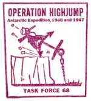
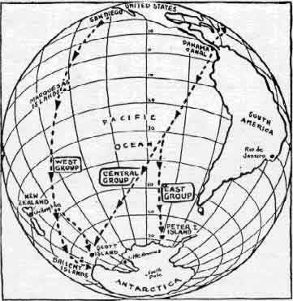
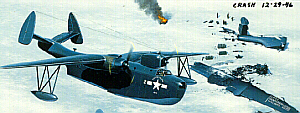
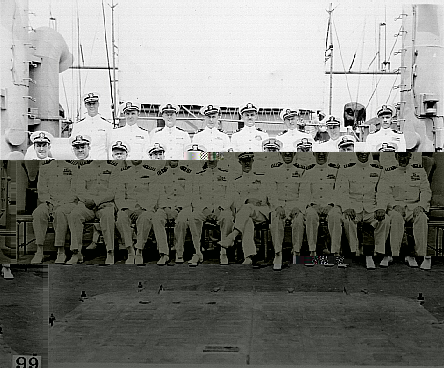
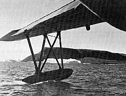
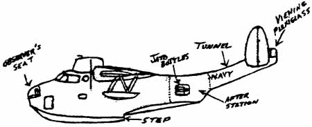
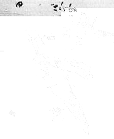
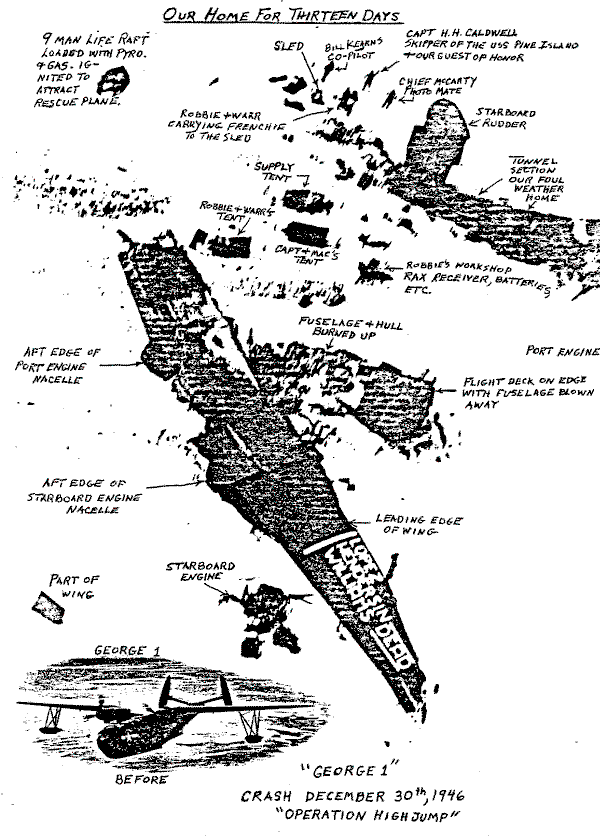
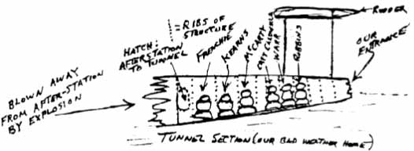

Bon nombre de nazis croyaient au principe de la race supérieure venue des régions septentrionales de la planète, là
où se trouvait la mythique Thulé. Mais ils croyaient aussi en l'existence de royaumes souterrains, d'une Terre creuse où se serait réfugiée une race de
surhommes. Afin de découvrir l'accès à ce monde souterrain qui, depuis le début du 19ème siècle, avait généré une
importante littérature, des expéditions avaient été entreprises. L'accès principal était supposé se trouver à la
hauteur des pôles.
Du fait que certains dirigeants nazis adhéraient à de telles idées, il n'y aurait rien eu d'étonnant à ce que, après
l'expédition navale de du capitaine Richter, le Reich ait installé une base sur la Terre de la
reine Maud qu'il revendiquait. Il semble en tout cas qu'il ait régné là-bas une certaine activité navale et que des
combats s'y soient produits au cours de la seconde guerre mondiale.
Au commencement
Cachet de l'expédition

L'amiral D. C. Ramsey, chef des opérations navales, signe à Washington une série d'ordres adressés aux commandants
en chef des Flottes Atlantiques et Pacifiques. Les ordres établissent le Project de Développements Antarctique (Antarctic
Developments Project), qui doit être mené durant l'été Antarctique, de .
Le chef des opérations navales, l'amiral Nimitz, donne au
projet le nom de code "Opération Highjump".
Les instructions sont pour 12 navires et des milliers d'hommes de faire route vers l'Antarctique pour :
entraîner le personnel et tester le matériel pour les zones glaciaires ;
consolider et étendre la souverainté américaine sur la plus grande partie praticable du continent Antarctique ;
déterminer la faisabilité de l'établissement de bases dans l'Antarctique et de rechercher
des sites possibles pour des bases ;
de développer des techniques pour établir et maintenir des bases aériennes sur la glace, avec une attention
particulière à l'applicabilité de ces techniques à des opérations dans les terres intérieures du Groenland, où, il
est déclaré, les conditions physiques et climatiques sont semblables à celles de l'Antarctique, et ;
augmenter la connaissance actuelle des conditions hydrographiques, géographiques, géologiques, météorologiques
et électromagnétiques de la région.
Les plans de la tentative sont d'établir une base américaine sur le Plateau Gelé de Ross près de Little America
III, lieu de l'expédition de Byrd entre . Une fois Little America IV établie, une "expansion
radiale externe d'exploration aérienne" pourra être entreprise par des avions basés sur des navires opérant le long
de la côte Antarctique et par
d'autres avions partant de la base terrestre de Little America. Bien que non explicitement indiqué dans les ordres
du , un objectif central du projet est la cartographie aérienne de la plus grande partie
possible de l'Antarctique, en
particulier la côte.
Le , l'amiral Marc A. Mitscher, commandant-en-chef de la Flotte Atlantique, nomme le
capitaine Richard H. Cruzen, qui participa à l'Expédition de Service Antarctique des Etats-Unis avec
Richard Byrd entre et , comme commandant de l'opération Highjump. L'Amiral
Mitscher demande à Cruzen de terminer le projet lorsque les conditions de la glace et de la mer rendent des
recherches plus avancées "non profitables". Il n'est "pas prévu qu'un navire ou avion reste en Antarctique durant les mois
d'hiver". Les propres ordres de Cruzens sont donnés 2 jours plus tard, centrés autour de la construction et de
l'établissement d'une base temporaire sur le Plateau Glacé de Ross en Antarctique afin d'étendre
la zone explorée du continent et de tester le matériel en conditions de gel. Le 20 novembre, seulement
2 semaines après les premiers bateau en mer, Cruzen donne des instructions supplémentaires indiquant les dates de
départ de navire et leurs trajets, l'affectation du personnel et des équipements, etc. De plus, un autre navire est
ajouté à la liste de ceux partant au Sud — the nouveau porte-avion Philippine Sea — avec l'amiral Byrd à
son bord. Celui-ci doit avoir 6 appareils de transport militaire R4D amarrés sur le pont pour être utilisés depuis
la terre à Little America IV. L'amiral Byrd doit amener un R4D à Little America IV et prendre le rôle de commandant
scientifique en chef du projet. Avant la fin des opérations, Byrd doit effectuer un vol au-dessus du Pôle Sud. Bien
que tout ceci fussent les plans et objectifs établis du projet, le but et l'origine du Projet de Développements de
l'Antarctique de
étaient plus complexes.
Depuis début , un monde sans pitié et déchiré par la guerre refletant une paix toujours fragile,
l'Antartique et les régions polaires deviennent à nouveau un centre d'attraction de tous les intérêts humains. En
janvier, Lincoln Ellsworth annonce à la presse son intention de procéder à un exercice de cartographie terrestre et
aérienne en Antartique. Egalement en janvier, le fameux aviateur Eddie Rickenbacker pousse l'exploration américaine
de l'Antartique, comprenant l'utilisation de bombes atomiques pour la recherche de minerai. A la fin de l'automne,
les flottes de pêcheurs de cétacés des Pays-Bas (Willem Barendsz) et de l'Union Soviétique (Slava) œuvrent dans les
eaux de l'Antartique pour la 1ʳᵉ fois (cette 1ʳᵉ opération allemande de pêche de Antarctique est menée dans une
zone entre Bouvet et les Iles Sandwich du Sud. 5 zoologistes accompagnent le voyage pour des recherches sur les
baleines et les oiseaux). En novembre le New York Times titre sur la course de 6 nations vers l'Antarctiquedéclenchée par
des rapports indiquant des dépôts d'uranium. L'article indique que les Britanniques mênent la course en
envoyant une expédition secrète pour occuper la base Est de Byrd établie en à
Marguerite Bay sur la péninsule Antarctique.
En fait, les Britanniques sont actifs en Antarctique
depuis des années. Après le début de la guerre, quelques navires de commerce allemands, principalement des pirates,
naviguèrent dans les eaux Antartiques à la recherche de victimes potentielles. En , le
commandant allemand Ernst-Felix Krüder, à board du Pinguin, capture une flotte de pêche norvégienne (les
bateaux-usines Ole Wegger et Pelagos, le navire de ravitaillement Solglimt et 11 baleiniers) aux environ de la
position 59° Sud, 02°30' Ouest. Le Pinguin est finalement coulé dans le Golfe Persique par le HMS Cornwall le 8 Mai
1941, après avoir capturé 136550 t de cargaison Britannique et alliée. L'Argentine,
une nation restée longtemps neutre, saisit l'opportunité de la guerre pour étendre ses revendications territoriales
en Antarctique. En ,
le commandant Alberto J. Oddera, à bord du Primero de Mayo, visite l'Ile Déception dans les Shetlands du Sud et le 8
février l'Argentine prend formellement possession du secteur entre les longitudes
25° Ouest et 68°34' Ouest, au sud de 60° Sud. La possession des Iles Melchior est déclarée le 20 février et celles
des Iles Argentine le 24 février. Le gouvernement argentain avertit officiellement le gouvernement du Royaume-Uni le
, leur faisant savoir qu'ils ont laissé des cylindres de cuivre contenant les notices
officielles de leurs revendications sur les 3 sites. En , la British Royal Navy lance l'Opération
Tabarin (commandée par Keith Allan John Pitt à bord du Fitzroy et Victor Aloysius John Baptist Marchesi à bord du
HMS William Scoresby), afin d'établir des stations météorologiques permanentes à Port Lockroy (Base A) et sur l'Ile
Déception (Base B). Les cylindres laissés par l'expédition argentine de
sont enlevés des 2 sites comme le cylindre laissé aux Iles Melchior. Une occupation est
entreprise, sans succès, à Hope Bay et les investigations ne trouveront par la suite aucune base viable sur la
Péninsule Antarctique.
L'expédition visite également les Iles Orkney du Sud et la Georgie du Sud et durant l'hiver 1944, des programmes de
géologie, biologie et de topographie sont menés. C'est la première d'une série d'expédition britanniques de la Royal
Navy, de l'Inspection des Dépendances des Iles Falkland, et de l'Inspection Britannique de l'Antarctique.
En le gouvernement des Dépendances des Iles Falkland est établit et en décembre de cette même
année des timbres de la poste paraissent pour 4 des dépendances — Graham Land, les Iles du Sud Shetland, la
Géorgie du Sud et le Iles Orkney du Sud. Fin , l'Opération Tabarin II commence avec l'aide d'un
troisième navire, le Eagle, commandé par Robert Carl Sheppard. Les 2 stations existantes sont réactivées et une
nouvelle station météorologique est établie à Hope Bay (Base D). Un refuge est construit à Sandefjord Bay (Base P)
sur l'Ile Coronation dans les Iles Orkney du Sud (détruite par la suite par une tempête en ). A
la fin de la guerre, les responsabilités administratives des bases établies sous l'Opération Tabarin sont
transférées de l'Amirauté au Bureau Colonial sous leur nouveau nom, l'Inspection des Dépendances des Iles Falkland
(Falkland Islands Dependencies Survey, ou FIDS). Au cours de l'été Antarctique de
, la FIDS établit de nouvelles bases sur Cape Geddes, l'Ile de Laurie (Base C) et l'Ile
Stonington (Base E). L'été suivant, la FIDS établit des sites sur l'Ile Winter dans les Iles Argentines (Base F),
sur l'Ile Signy dans les Iles Orkney du Sud (Base H) et un nouveau refuge est construit et temporairement occupé
dans la Baie de l'Amirauté, sur l'Ile King George (Base G). Fin , Oslo notifie Washington de la
possibilité de réaffirmer ses anciennes revendications de régions de l'Antarctique et la 1ʳᵉ semaine
de juillet, George Messersmith, ambassadeur des Etats-Unis à Buenos Aires indique que le gouvernement argentain
s'apprête à disputer les droits territoriaux des Britanniques sur les Falklands. Quelques jours plus tard Claude
Bowers, à Santiago (Chili), informe le Département d'Etat que le gouvernement chilien est
furieux des déclarations définitives des Britanniques.
Ajoutant de l'huile sur le feu, les britanniques diffusent une série de 8 timbres postaux le 1er février 1946,
commémorant leurs déclaration des Dépendances des Iles Falkland. Le nouveau timbre représente une carte de l'Antarctique, outrepassant
complètement les déclarations chiliennes aussi bien que celles de l'Argentine. Pour
la 1ʳᵉ fois dans l'histoire, une crise internationale se trame sur les revendications territoriales des terres
vierges de l'Antarctique. L'état
lamentable de l'économie mondiale porte les plus hautes tensions vers une dimension globale. Les nations les plus
industrialisées d'Europe ont subit une incroyable dévastation durant la guerre et nombre de ces pays considèrent
l'Antarctique comme une solution
à leur problème. Le premier à déposer une revendication légitime peut obtenir abondance de ressources brutes
nécessaires et couteuses. Jusqu'alors la position de l'amérique sur les régions polaires a toujours été qu'elle
devaient être ouverte pour l'exploration et la recherche par l'ensemble des parties concernées mais au matin de
l'annonce formelle de l'amiral Byrd de l'Opération Highjump le , les gouvernements
latino-américains deviennent nerveux et suspicieux à propos du célèbre Yankee américain. L'Opération Highjump est
perçue comme une énorme menace pour les future revendications latino-américaines. Après tout, 13 navires et 4700
hommes semblent bien confirmer le fait que les Etats-Unis ont leur propre plan pour partitionner les énormes
portions du continent. L'annonce à la presse officielle de Byrd semble confirmer leur anxiété, Highjump y étant
justifée comme une extension de la politique de la Marine des Etats-Unis de développement de la capacité
des forces navales à opérer dans n'importe quelles et toutes conditions climatiques. Un objectif déclaré
publiquement est de consolider et développer les résultats de l'Expédition de Service Antarctique des Etats-Unis de
. A ce moment, les suspicions latines semblent justifiées. L'approbation initiale de
l'Opération Highjump est apparemment obtenue lors d'une réunion du Comité des Trois (le Secrétaire d'Etat, le
Ministre de la Guerre et le Ministre de la Marine) le . Un mémorandum préparé pour la réunion
indique que la Navy propose d'envoyer une expédition en Antarctique dès
. Les objectifs de cette expédition incluent l'entraînement du personnel et le test des
matériels, la consolidation et le développement de la souveraineté des Etats-Unis sur les régions Antartiques, la
recherche de sites possibles de bases et le développement de la connaissance scientifique en général. L'amiral R.
E. Byrd sera désigné comme Officier-en-Charge du projet. Pe commandant de la Force d'Expédition sera le capitaine
R. H. Cruzen commandant actuellement l'Opération Nanook, une expédition en Arctique. Une semaine après la
réunion, Edward G. Trueblood, sénateur directeur du bureau Latino-Américain du Département d'Etat, envoie un
mémorandum au chef du bureau Européen indiquant qu'il n'y a aucune objection à l'Expédition Byrd tant que
aucun territoire revendiqué par certains gouvernements latino-américains. Le , le Secrétaire
d'Etat exécutif Dean Acheson donne l'accord de son département à Highjump avec l'indication que au regard des
revendications territoriales d'autres gouvernements dans l'Antarctique, il est suggéré
que les régions à visiter par l'expédition navale proposée soient discutée informellement entre les Départements
d'Etat et de la Navy... Cette discussion est tenue le 25 novembre, seulement une semaine avec le départ des
premiers navires. Acheson écrit au Secrétaire de la Navy James Forrestal le et lui fait part
de son accord total avec l'avis majoritaire obtenu à la réunion de novembre et que ce gouvernment devrait
suivre une politique définie d'exploration et d'utilisation des zones Antarctiques considérées
désirables pour être acquises par les Etats-Unis. La position formelle des Etats-Unis étant de ne reconnaître
aucune revendication de territoire en Antarctique,
du point de vue de ce Département les navires, avions ou le personnel du Projet Naval de Développements Antarctiques de
ne sont pas dépendants de droits ou revendications territoriales préalables d'autres états pour
pénétrer et engager des activités de plein droit dans chacune de ces régions ou de procéder à des déclarations
symboliques à cet endroit ou sur des territoires nouvellement découverts pour les Etats-Unis. L'amiral Marc
Mitscher, commandant en chef de la Flotte Atlantique, est même plus défiant encore dans ses Instructions pour
l'Opération Highjump fournies le 15 octobre. Les Objectifs incluent la Consolidation et l'étente de
la souveraineté des Etats-Unis sur la région praticable la plus vaste du contient Antarctique. Peut-être
les Départements d'Etats et de la Navy souhaitaient des revendictions de territoires supérieures, mais le fait est
qu'aucune déclaration formelle ne fut faite pas les hommes de l'Opération Highjump. Celle-ci ne fut pas lancée en
précipitation pour les ressources naturelles de l'Antarctique ni pour l'objectif principal d'expansion territoriale. D'après les
informations de la conférence de presse de l'amiral Byrd du 12 novembre annonçant l'Opération Highjump, La Navy
dément catégoriquement les rapports indiquant que le voyage sera avant tout une étape dans la course à l'uranium.
'Lors de la première discussion concernant cette expédition, l'uranium ne fut même pas mentionné. Dire qu'il
s'agit d'une course à l'uranium pour l'énergie atomique n'est pas correct', a déclaré l'amiral Byrd.
Cependant, les objectifs de base ne sont pas diplomatiques, scientifiques ou économiques — ils sont militaires.
L'Opération Highjump est, et reste à ce jour, la plus grande expédition Antarctique jamais organisée.
Pré-Highjump : Opérations navales 1945-1946
Les commentaires de l'amiral Byrd dans son communiqué à la presse du indiquent que ...les
objectifs de l'opération sont principalement de nature militaire, c'est-à-dire d'entraîner le personnel naval et de
tester les navires, avions et l'équipement en conditions de régions gelées... Un objectif primordial de l'expédition
est d'apprendre comment l'équipement standard et de tous les jours de la Navy se comportera dans les conditions de
tous les jours. Les soviétiques s'intéressent de près à ce projet et en font un édito dans leur journal naval,
Flotte Rouge, indiquant à la suite de la conférence de presse de Byrd que les mesures U.S. en Antarctique confirment que les
cercles militaires américains cherchent à soumettre les régions [polaires] à leur
contrôle et à créer des bases permanentes pour leurs forces armées.
Les relations sovétiques-américaines se détériorent rapidement au cours de et avec l'intérêt
croissant des américains pour les 2 régions polaires, l'anxiété des russes augmente de jour en jour. Les soviétiques
réalisent vite que si une 3ᵉ guerre mondiale intervenait entre la Russie et l'Ouest, un champ de bataille
stratégique serait très sûrement dans la région polaire du Nord. Il est du plus grand intérêt pour les américains
d'exposer et de préparer leurs hommes, navires et équipement aux conditions extrêmes des régions polaires aussi
rapidement et efficacement que possible.
L'environnement politique américain de joue également un rôle non négligeable dans l'Opération
Highjump. Après la fin de la 2nde guerre mondiale, de nombreux politiques débattent dans le pays à propos du mérite
d'un seul commandement militaire unifié sous un seul département de la défense nationale. Au début la Navy agrée à
l'idée. Pourtant, au fur et à mesure que les détails arrivent, survient la peur d'une Navy dominée par les jeunes
généraux arrogants et rugueux de l'Air Force qui relègueraient la Navy à de simples procédures de défense de la
côte. On dit à Washington que les corps de la marine opéreraient sous l'armée alors que les transporteurs aériens
seraient sous la direction de l'Air Force. La consolidation économiserait à l'évidence beaucoup d'argent au
contribuable américain mais la Navy ne veut tout simplement pas en faire partie. En conséquence, la Navy perd une
grande part du soutien populaire. Mi-, les amiraux cherchent un moyen de dramatiser l'efficacité de
la marine. Cette anxiété, couplée à la montée de la guerre froide, crée l'opportunité d'une expansion très forte
vers l'exploration polaire.
Le 1er programme naval d'exploration polaire est l'Opération Frostbite (Morsure du froid) à la fin et
pendant l'hiver . Une poignée de navires accompagnent le nouveau transporteur aérien Midway à
Davis Straits, près des côtes du Greenland, où des hommes et l'équipement subissent un test éprouvant. Déchirés
par les hautes mers et les blizzards féroces dans un froid extrême avec des monceaux de neige sur le pont d'envol,
ils opèrent dans les conditions les plus exigentes pour prouver que de telles opérations sont faisables.
Cependant, l'Opération Frostbite n'a pas été menée assez loin vers le nord. Les été Arctiques sont simplement trop
doux pour exposer inadéquatement et entraîner des hommes à des températures sous zéro. En conséquence, afin
d'entraîner une assez grande marine aux expéditions polaires, le test doit se dérouler dans des régions d'un climat
plus sévère pour une période de temps prolongée.
Le , Le Congrès approuve la Loi Publique 296 demandant au chef du Bureau Climatologique des
Etats-Unis d'établir un réseau international de rapport météorologique dans les régions Arctiques de l'hémisphère
occidental. Le Bureau Climatologique se tourne vers l'armée et la marine et ensemble, les 3 agences arrivent à
un plan de construction de stations de rapport à Thule (Greenland) et à la pointe Sud de l'Ile de Melville dans
l'Arctique Canadien. Le commandant de la Flotte Atlantique U.S., l'amiral Marc A. Mitscher, sélectionne quelques
navires, désignés sous le nom de Task Force 68, et nomme le capitaine Richard Cruzen commandant de l'Opération
Nanook. Les premiers ordres de l'amiral Cruzen, donnés le 31 Mai 1946, demandent un plan général dont la 2nde
phase consiste en opérations pour établir des stations d'observation et de rapport du Bureau Climatique U.S.
dans l'Arctique Canadien et le Greenland. De plus, Cruzen commande un brise-glaces, le Eastwind, ainsi
qu'un hydrabion, le Norton Sound, pour opérer aux environs de la limite Sud de la zone de glaces devant
être rencontrée dans la région de Baffin Bay. Ceci peut être un projet pacifique pour effectuer des
observations météorologiques dans l'Arctique, mais un argument intéressant peut évoquer que ces stations peuvent
être également utilisées comme sites de collecte de renseignements. Quoi qu'il en soit, c'est avec ces 2 projets que
l'U.S. Navy commence son effort pour exposer systématiquement hommes et machines aux rigueurs de la vie polaire.
La "famille" Byrd et Highjump
Mais quel rôle Byrd et ses compagnons, en particulier Paul Siple, jouent durant cette période ? En fait, ils
trouvent la plupart de leur travail de recherche assuré par le gouvernement, le tout au nom de la Défense Nationale.
Paul Siple n'a pas seulement affecté des hommes à des travaux en Alaska et dans le Greenland au cours de la 2nde
guerre mondiale ; il a aussi voyagé en Europe pour conseiller Eisenhower
et ses généraux sur la meilleure manière d'éviter une épidémie de pieds amputés parmi ses hommes. Au printemps
, Siple se rend aux Philippines pour conseiller MacArthursur l'habillage et la protection en hiver des forces se préparant à envahir les principales îles du Japon.
Après la fin de la guerre, Siple se retrouve à travailler pour le service fédéral en tant que scientifique civil
pour le Bureau de Recherche et Développement du commandant en chef de l'armée. Il est un homme brillant et pourrait
facilement enseigner à l'université dans son propre département de science et de géographie, mais peu d'universités
contiennent de tels départements et aucun fond n'est disponible pour établir son propre centre de recherche,
particulièrement pour quelque chose d'aussi exotique que l'étude de zones polaires. A la place, il devient un
participant actif de la guerre froide. Il écrira plus tard, Ma nouvelle carrière consistait à introduire
l'application de mes concepts de recherche environnementale à l'équipement et au personnel de l'Armée dans tout
environnement où ils puissent être appelés à combattre pour préserver la liberté de vie. Mon intérêt était de
m'étendre sur des aspects entiers de la recherche basique et le segment dont j'étais un représentant scientifique
finit par se développer dans le Bureau de Recherche de l'Armée.
Mais pas une personne n'est plus responsable de l'Opération Highjump que Richard E. Byrd. La réputation de Byrd a
florit durant la guerre. Il a été nommé adjoint spécial du directeur des opérations navales, l'amiral Ernest J.
King, et est un ami proche et personnel du président Roosevelt.
Entre il se rend sur les fronts de la guerre en Europe, en Alaska et dans le Pacifique Nord.
Mais le fougueux amiral de la vague Antarctique
de n'a jamais commandé le moindre navire de combat au cours de la guerre. Maintenant, avec la fin
de la guerre, la marine découvre tout à coup qu'elle a besoin de Richard Byrd. Si elle ne veut pas être déchargée de
son rôle, en particulier celui de l'aviation navale, un plan pour mettre en évidence sa valeur doit être rapidement
élaboré. D'après Paul Siple, c'est Byrd qui persuade le Secrétaire de la Navy James Forrestal et le Directeur des
Opérations Navales Chester Nimitz de lancer une énorme
expédition navale en Antarctique.
A côté de cela, l'obsession de Forrestal pour la menace soviétique trouve une sympathie et un support grandissants
au Capitol. Un autre allié proche fut le frère de Richard Byrd, le sénateur Harry Flood Byrd, alors chef de la
puissance machine familiale qui a soutenu le parti Démocrate en Virginie. Harry est une figure-clé des Démocrates du
"Sud Solide" des années et . Harry possède une grande influence sur la chambre
des députés et de nombreux présidents, en particulier les nouveaux présidents à la popularité vascillante, le
suivent. Comme on peut s'y attendre, Harry suit Richard quoi que veuille Richard et en , Richard
veut retourner en Antarctique.
Comment le haut commandement de la marine réussit à convaincre le Congrès de financer l'expédition coûteuse reste un
mystère. La Navy n'a pas été responsable d'une expédition au Pôle Sud depuis l'exploration de Charles Wilkes une
centaine d'années plus tôt. On peut juste supposer que le pays était excité à l'idée d'engager la plus grande
expédition en Antarctique de
l'histoire, en temps de paix, dans une aventure n'impliquant apparemment ni morts ni destructions. La "menace
soviétique", accompagnée de la menace d'une guerre en Arctique, est peut-être la seule raison.
L'U.S. Navy insiste sur le fait que l'Opération Highjump va être un show naval, avec les intérêts de la marine
prédominant sur les études scientifiques. Les ordres préliminaires de l'amiral Ramsey le
indiquent que Le Directeur de Opérations Navales seul s'entretiendra avec d'autres agences du gouvernement
liées à Highjump. Aucune négociation diplomatique n'est requise. Aucun observateur étranger ne sera accepté.
Il semble donc qu'il y ait peu de place pour les scientifiques et observateurs civils. Par la suite, le directeur
des opérations navales fait part via un courrier à divers autres départements et agences gouvernementaux d'une
invitation à participer modestement à Highjump. D'après le Rapprt des Observateurs de l'Armée, Le Département de
la Guerre répondit promptement à l'invitation de la Navy à envoyer des observateurs sur cette importante
expédition et accrut sa représentation jusqu'à 16, 10 de plus que préalablement alloué par la Navy. Le personnel
comprenait 4 hommes ayant déjà servi en Antarctique,
dont Paul Siple. Sont également invités à participer des observateurs de l'armée, du Bureau Climatologique, de
l'Inspection Géologique des Côtes, de l'Inspection Géologique et le Service de la Vie Marine et Sauvage. Les études
scientifiques recommandées sont les mesures aérologiques (observations synoptiques, météorologieradar, intensité de la radiation solaire), les
observations magnétiques terrestres, les études géologiques aériennes (y compris la Recherche Aérienne pour les
Matériaux Source d'Energie Atomique), l'étude des rayons cosmiques, etc. Des scientifiques et chercheurs
réputés présents sont Jack Hough, Bill Metcalf et David Barnes de l'Institut Océanographique de Woods Hole. Dès le
retour des navires de l'Opération Nanook, le 18 september, le planning est intenfié et une date de départ officielle
est annoncée pour le 2 décembre.
Les plans finaux
A l'exception de Cruzen, tous les navires et hommes prévus finissent par être changés. Le chef de l'expédition est
Richard Byrd, qui base ses opérations à Little America et tentera plus tard de voler jusqu'au Pôle Sud, et peut-être
au-delà. Afin d'exposer autant d'hommes que possible aux conditions polaires, aucun des navires de l'Opération
Nanook n'est envoyé au Sud. A la place, les commandants des Flottes Pacifiques et Atlantiques désignent chacun 6
vaisseaux pour l'expédition. Le drapeau de l'expédition, Le Mont Olympe, vient de la Flotte Atlantique. Le navire
est bourré d'équipement de communication et électronique relativement primitif pour l'époque. Viennent aussi de la
Flotte Atlantique le brise-glaces Northwind, l'hydravion Pine Island, le fleet oiler
Canisteo, le destroyer Brownson, le sous-marin Sennet et, dernier à partir pour arriver au
même moment en Antarctique, le
nouveau transporteur de flotte aérien Philippine Sea. La Flotte Pacifique fournit le destroyer Henderson,
les vaisseaux-cargo Yancey et Merrick, l'hydravion Currituck, le fleet oiler
Cacapon et le brise-glace de la marine Burton Island.
Une conférence se tient au début de l'automne au Bureau Hydrographique Nael à Suitland (Maryland), pour préparer
les cartes et les directives de navigation de l'Opération Highjump. Ils réalisent rapidement que les cartes les plus
sûres de la Mer de Ross sont celles de l'amirauté britannique. Des copies sont envoyées à tous les navires. Cruzen,
Byrd et d'autres réfléchissent sérieusement aux objectifs et priorités de l'expédition et concluent ensemble que le
seul et plus spectaculaire objectif doit être la cartographie aérienne de la côte Antarctique ainsi que ses
terres intérieures tant que possible. L'expédition se divisera en 3 groupes dont le Groupe Central, mené par le
sous-marin Garde-Côtes Cutter Northwind, poussant jusqu'au bloc de glace de la Mer de Ross. Suivent de près
derrière les navires-cargos Yancey et Merrick, le sous-marin Sennet (envoyé pour tester
ses capacités opérationnelles en conditions polaires) et le porte-drapeau Mont Olympus (le
nouveau-brise-glaces de la marine Burton Island, membre du Groupe Central, effectue toujours des
entraînements de base et des tests en mer au large des côtes californiennes lorsque l'Opération Highjump est
lancée).

Les cartes et directives de navigation utilisées pour l'Opération Highjump furent assemblées comme une collection
d'esprits au Bureau Hydrographic de Suitland (Maryland), au début de l'hiver
. Les cartes de la Mer de Ross préparées par l'Amirauté Britannique semblent être les plus fiables
et sont par la suite reproduites et distribuées à l'ensemble des navires. En conséquence, le Northwind allait
reposer exclusivement sur ces cartes pour guider les navires du Groupe Central au travers de la zone de glace et
dans la Mer de Ross. Les amiraux Byrd et Cruzen (promus contre-amiraux avant leur départ) déterminent que la plus
grande priorité de l'expédition doit être la cartographie presque exhaustive de la calotte Antartique et aussi vers
l'intérieur que possibleL'expédition doit être divisée en 3 groupes. Le Groupe Central, mené par le Northwind,
incluerait les navires cargo Yancey et Merrick, le sous-marin Sennet (envoyé spécifiquement pour tester ses
capacités en conditions polaires) et le navire porte-drapeau de l'expédition, le Mont Olympe. Le
brise-glace Burton de la Navy arriverait plus tard pour les étapes finales de Highjump. Once alongside the shelf ice
at the Bay of Whales, Little America IV would be established. A landing strip for the six R4D (military version of
the DC-3) transport planes would be laid out, serving as a base of operations for the aerial mapping missions to
follow. In order to carry out this mission, the Central Group would be supported by the aircraft carrier Philippine
Sea which would carry the planes, along with Admiral Byrd, to the edge of the ice pack. From here the planes would
make the risky six-hour flight to Little America IV. To assist the planes in takeoff from the narrow flight deck,
Jet-Assisted Take-Off (JATO) bottles, filled with jet fuel, would be attached under the wings and ignited just
seconds after the plane began to roll, thereby dramatically increasing the speed necessary for take-off. The R4D's
were the heaviest aircraft ever to launch from a carrier. They would also be the first to take off on one end with
wheels and land on the other end with skis. They had only 400 feet of take-off to work with, otherwise their wide
wingspan would collide with the carrier's superstructure. First to depart would be Admiral Byrd, with skilled polar
flyer William "Trigger" Hawkes at the controls.
On either side of the Central Group and the Phillipine Sea would be the Eastern and Western Groups. The Eastern
Group, built around the seaplane tender Pine Island, would rendezvous at Peter I Island and from there would move
toward zero degrees longitude (Greenwich Meridian). Joining the Pine Island would be the oiler Canisteo and the
destroyer Brownson. The Western Group would be built around the seaplane tender Currituck. The Currituck would
rendezvous, together with the oiler Cacapon and destroyer Henderson, at the Balleny Islands and then proceed on a
westward course around Antarctica until, hopefully, it met up with the Eastern Group. Each of the seaplane tenders
would be supplied with three Martin Mariner PBM flying boats, the largest and most modern seaplanes built during
World War II. Plans were made to daily lower each plane into the sea, from where they would take off on flights of
many hours in an attempt to photograph as much of the coast and interior as possible.
Le PBM George 2 et George 1 écrasé

If all went according to plan, and the crews performed flawlessly, then there was a chance, as Admiral Byrd later
wrote, "that a complete circle could be closed around the continent. It was hoped that in a few weeks more would be
learned of the great unknown than had come from a century of previous exploration by land and sea".
Throughout , swift preparations were underway around the country. Admiral Cruzen and
his subordinates on both coasts were busy ordering parkas, goggles, boots, thermal underwear, special tents and the
matting for Little America's new runway. Special trainers were sent by Byrd and Paul Siple into the New Hampshire
woods to work with the dogs. Meanwhile, caterpillar tractors, forklift trucks, "weasels" (powered sleds) and other
heavy machinery were being manufactured and loaded onto railroad cars and shipped to docksides in California and
Virginia. But all was not well. Huge concerns were in the minds of planners as, for the very first time in Antarctic
history, every vessel used in the expedition would be steel hulled. Steel is certainly stronger than wood, however
wood tends to splinter in the viselike grip of pack ice while steel is usually ripped apart. It is true that Byrd
successfully maneuvered the Eleanor Bolling through the ice pack and around the shelf in , however
the Bolling's hull was significantly thicker than that of most of the ships used in Highjump. Compounding this
problem was the fact that all but a handful of men were totally lacking in adequate training for polar conditions.
As Professor Bertrand later noted, "Although personnel of Operation Nanook served as a nucleus for staffing
Operation Highjump, the much greater size of the later expedition necessitated the filling of many posts with men
who had no previous polar exploration. It was possible to obtain the services of only eleven veterans of previous
U.S. Antarctic expeditions. Only two pilots in the Central Group of the Task Force had experience in flying
photographic missions". As a matter of fact, none of the seaplane pilots or flight crews had ever flown in
Antarctica before. Only Byrd's personal pilot, Commander William M. Hawkes, had polar experience as he had logged
hundreds of hours in the treacherous skies of Alaska. Extensive ship movements only made matters worse as the lives
of many men and their families were suddenly disrupted, uprooted and shipped across country on the eve of the
expedition. The Merrick and Yancey were attached to the Atlantic Fleet when in October they were ordered to sail for
Port Hueneme, California, to prepare for the exercise. The Mount Olympus, which played a major combat role in the
war, and the Pine Island had spent most of their lives in the Pacific Fleet and now were suddenly ordered to the
Atlantic Fleet for preparations. With all the turmoil, Captain Rees of the Mount Olympus wrote in exasperation to
Admiral Cruzen, "Details as to the nature of the operation are completely unknown. It is therefore urgently
requested that this vessel be informed at once as to what special equipment, instruments, clothing, etc. . . the
ship must obtain in the limited time remaining. The ship can not be considered a smart ship". The carrier Philippine
Sea had completed its shakedown cruise only weeks before, yet now the ship and its crew were expected to launch the
largest planes ever sent from a carrier deck, quite possibly under extreme weather conditions. The navy's new
icebreaker, the Burton Island, was still undergoing basic sea trials and training off the California coast as
Operation Highjump began. This meant that during the earliest and possibly most crucial stages of the expedition,
Cruzen and his untrained men would have to rely solely on the Northwind to get the four thin-skinned ships of the
Central Group through the ice pack and into the Ross Sea. Not only that, but if any of the ships from the Eastern or
Western Groups ran into trouble, only the Northwind would be able to assist. If the Northwind should become disabled
herself, the entire Central Group could be left helplessly for weeks, deep in the Ross Sea, certain prey for
icebergs and the crushing pack ice.
The inexperience of the men, particularly the fliers, was all too apparent. One of the pilots, Lieutenant (jg)
William Kearns, later recalled that volunteer pilots, navigators and air crewmen were gleaned from both the Atlantic
and Pacific Fleets "in the fond hope that some experienced men would be among those selected. Since the vast
majority of personnel knew nothing about the type of operation for which we were destined, we were forced to dig
into books for even the most elementary information". The information was frightening. Temperatures were far colder
than the Arctic regions and the fliers could fall prey to an empty, inhuman landscape from which no help could be
expected. Traditional navigational aids were of little help as Mercator projections were of no use due to the
convergence of meridians at high latitudes and the consequent distortion of areas between the parallels. Thus, a
grid system would have to be used. "From the experiences of men who had been to both regions and learned the hard
way, we saw that polar flying, even at its best, was never really safe. There were no airways, no weather reporting
stations, no convenient alternate airports. We were, in fact, extremely fortunate if we found any charts at all
available for the 'Highjump' operating area. With all these facts in mind, some of us began to regret our decisions
to become intrepid Antarctic explorers, and to long for the good green lands and the waving palms of Florida". Pilot
Thomas R. Henry wrote, "Once a plane rose from the ski strip at Little America, it was virtually imprisoned in the
sky for at least five hours; it could come down only with a crash landing on the rough ice surface, which would
almost certainly ruin the aircraft itself and seriously endanger the crew". If the mapping objectives of Highjump
were to be met, planes would have to be heavily overloaded with photographic equipment and topped-off fuel tanks.
Antarctica was simply too large, its weather too unpredictable, not to make every flight fully count in terms of
photographic exploration during the brief expedition.
A certain sense of uneasiness flowed through the seaplane crews at Norfolk, Virginia. The follow-up report on
their mission stated that the operation "was characterized by a very limited period of personnel training, material
inspections and logistic planning". The crews of all six PBM's were drawn from current squadrons and assembled at
the Naval Air Station, Norfolk, VA, on . This gave them only one month to prepare. Meanwhile,
the PBM's were winterized and fitted out with some special navigational instruments, as well as the trimetrogon
photographic equipment. Survival gear was gathered as the crews were quickly instructed in polar navigation. On
November 27 three of the seaplanes flew from Norfolk to San Diego, California, and were lifted aboard the Currituck,
which was in its final loading phase. Back in Virginia, the other three planes were brought aboard the Pine Island.
When the Pine Island reached the Panama Canal, the planes had to be sent off, later landing at Balboa on the Pacific
side, in order to get through the canal.
Despite the many risks of such an adventure, morale actually turned for the better as sailing time approached.
Married men, many of whom had spent prolonged months of separation from their spouses during the war, were obviously
less enthusiastic than their generally younger, unmarried peers. But, as the official report noted, the general mood
was one of a "trip of a lifetime" and of "a big expedition to Antarctica".
As last-minute preparations were underway, diplomats of several nations continued to snip at one another. On
November 13, Ellis O. Briggs of the Latin American bureau of the State Department noted that "The [British] Empire
continues to bleed over the forthcoming Byrd Antarctic expedition if Mr. Everson of the British Embassy who called
on me this morning is to be believed". Briggs told Everson "that our Government is at least as interested in
practicing cold water operations as it is in what may be found sub-zero, sub-rosa, sub-ice caps, etc." However,
Everson "did not seem altogether soothed". Briggs went on to say that Everson muttered something about Antarctica
being British territory and that the United States should have cleared the expedition with His Majesty's government.
"If London has any such notions as that, I assume steps will be taken to disabuse our British friends of any belief
that we consider Antarctica British", Briggs concluded. Two days later Briggs noted that New Zealand, Australia and
Chile had also indicated a rather keen interest in the motives and objectives of Operation Highjump. Would the
United States abandon current policy and lay claim to vast areas not only claimed by the above, but also by the
French, Norwegians and Argentineans? Briggs noted that representatives of the governments of Australia, New Zealand
and Chile requested permission to go along as observers but that permission was firmly opposed by the navy. Finally,
on November 27 as the Yancey and Merrick began to cram aboard every last item remaining on the docks at Port
Hueneme, Acting Secretary of State Dean Acheson telephoned Briggs to ask if he foresaw any "political difficulties"
in the "Byrd expedition". According to the Secretary, President Truman's naval aide, Admiral Leahy, had expressed
concern that it might be too bad to have the Chileans, "now so full of good will, acquire hurt feelings". Briggs
attempted to put his President at ease, saying that both Chile and Argentina had expressed "some interest" in
Highjump, however "I did not believe that relations with either country would be affected in any substantial or
noticeable way by the expedition". Perhaps Secretary Acheson was put at ease, but the same can not be said of the
President. At the very last moment, probably December 1 or 2, President Harry Truman tried to stop Operation
Highjump. Briggs was told that "the navy" had suddenly been called into the Oval Office and told to cancel the
expedition. When "the Navy Department remonstrated, pointing out that if the expedition did not sail now the
opportunity would be lost, the President is supposed to have relented and allowed the expedition to proceed". Who
the President addressed that day is unclear, but it was possibly Nimitz, or more probably James Forrestal. In any
event, neither Byrd, Cruzen or the thousands of other men under their command were aware of how close they had come
to missing their "trip of a lifetime". By December 3, 1946, most of the ships were at sea; all the rest, but for the
Burton Island, were about to depart. Operation Highjump was underway.
L'expédition commence
Le 1er navire à quitter son port d'attache est le brise-glace Northwind, partant du port de la Marine de Boston le
. Le il arrive à Norfolk, VA, rejoignant
le navire Mount Olympus, le transporteur d'hydravion Pine Island et le destroyer Brownson
pour les préparatifs finaux. Finalement, le , tout est prêt. Peu avant ,
Byrd arrive à bord du Mount Olympus pour un déjeuner final avec Dick Cruzen. Afterwards, Byrd accoste et
annonce qu'il va attendre pour naviguer sur le transporteur Philippine Sea 30 jours plus tard. Il nomme
Paul Siple pour être son représentant en chef au Département de la Guerre sur l'expédition and with that, the Pine
Island cast off, to be followed shortly thereafter by the other three ships. The tiny fleet moved down the Roads,
past Old Point Comfort, Cape Henry and finally into the open sea where they abruptly turned south for their
10000-mile voyage to Antarctica. Le also found the ships of the Pacific Fleet pulling away
from various California ports: the seaplane tender Currituck and destroyer Henderson from San Diego, the oiler
Cacapon from San Pedro and the cargo ship Yancey from Port Hueneme. The cargo ship Merrick was still busy loading
gear and would pull out of Port Hueneme on December 5. The Atlantic Fleet sailed around Cuba through the Windward
Passage and across the Caribbean to Panama. On December 7, the four ships passed through the canal, docking at
Balboa on the Pacific side. Waiting for them was the submarine Sennet and oiler Canisteo, since they had previously
been assigned to the Central American station. By December 10 all the ships had arrived and as they left Panama
behind, the ships fanned our over many hundreds of miles as they made their voyage south.
Opérations en Antarctique
Les activités du Groupe Central
The Central Group rendezvoused at Scott Island on , in order to
follow the Northwind through the pack ice into the open waters of the Ross Sea. The modern icebreaker is one of
the most distinctive and remarkable vessels ever designed. And from this distinctive group of ships came the
hardest working vessels of their kind: the Wind-class sisters built during and just after World War II. A total of
seven were built by the Western Pipe and Steel Company of San Pedro, California. However, four of them were
sailing with a Soviet flag in as part of the lend-lease program with the Soviets, and the
last ship was not returned until . (When the American crew arrived at Bremerhaven to take over
the ship, subsequently renamed Staten Island, it was in horrific condition. The ship's desk drawers were crammed
with rotting tins of fish and the flight deck area was smeared with chicken blood and feathers. It would take two
cruises to the Arctic before the stench would disappear). Of the three remaining vessels, only the Northwind was
immediately available, as the Burton Island was still in service and the Eastwind was scheduled for service in the
Arctic. By default, the Northwind would mean success or failure as the thrust began.
When it became apparent that the ice presented a serious danger to the Sennet, the submarine was towed back to
Scott Island. The remainder of the group reached the Bay of Whales on , with the Northwind
breaking out a harbor in the bay ice for them. Over the following two days, landing parties went ashore and
selected a site for Little America IV, somewhat north of Little America III, the West Base of the
US Antarctic Service Expedition. Construction of the base and accompanying aircraft
facilities commenced immediately thereafter. Quite an assortment of vehicles were used in this undertaking,
including tractors, jeeps, weasels, bulldozers and other tracked equipment. On January 21, young sailor Vance
Woodall, from the Yancey, was working on the ice in the unloading area when a tractor nearby picked up a load of
snow roller sleds to move in to the barrier cache area. The D6 tractors were proving too heavy to ride on top of
the snow that lay on the surface of the bay ice. In order to gain sufficient towing purchase, the drivers had to
let the steel treads plow into the snow until reaching the hard ice. As a result, one tread would often grip the
ice before the other, throwing the tractor violently from side to side until both treads took equally. The
official accident report states that Woodall unfortunately caught both his right arm and head in the slats of the
roller just as the tractor suddenly lurched ahead. Woodall's spinal column was severed "high in the neck" and the
navy veteran of only seven months died instantly. By February 6 Little America consisted of a multitude of tents,
a sole Quonset hut, three compacted snow runways and a short airstrip made of steel matting. At one point, the
number of persons stationed at the base approached 300, but eventually this number had to be greatly reduced so
that the remaining individuals could be readily evacuated by the Burton Island.
Dans le même temps, peut après midi le , le transporteur Philippine Sea, avec
Byrd sur son pont, slowly pulled away from the pier at the Norfolk Navy Base as bands
played and the local command saluted farewell.
Un R4D
Le Philippine Sea had been finishing up a shakedown exercise off Guantanamo Bay, Cuba, when orders were
received that she would be participating in Operation Highjump. The brand new ship hurried north with an exuberant
crew cheering the news... this was certainly more exciting than routine shore leave in Hong Kong or Panama! But
what a task they had before them. Since she would be going through the canal, changes had to be made in the hull
and flight deck structures. A massive shipment of parts for twenty sleds came in from the Supply Office of the
Boston Navy Yard and quickly assembled for use by the Byrd party. A quantity of "Byrd cloth" was shipped in for
the construction of various items of cold weather clothing and equipment. An HO3S1 helicopter was flown
aboard along with approximately one hundred tons of miscellaneous equipment for use by the other ships
participating in Highjump. Next came the six R4D transport planes. They were obviously too big to be flown in at
sea so it took a little imagination to get them aboard. Since there was no landing field adjacent to the dock, a
mile-long swath had to be cut right through the middle of the naval base, from the field to the docks. What a site
it was as drivers had to "pilot" the planes through the narrow pathway, with sailors sitting on the wings to
prevent a sudden burst of wind from picking the plane up and hurling it against the sides of buildings, fences and
machinery, often within inches of the wingtips. Last aboard would be Byrd, just hours before shoving off.
The Philippine Sea reached the Canal Zone on , and the next day started the slow journey
through the locks. Byrd and his men departed Balboa for the Antarctic on January 10. The ship steamed south at
twenty knots toward Scott Island. By the vessel had reached 58°48'S, and "it was assumed
icebergs could be encountered during the day". One of the helicopters was readied for takeoff and as it lifted
from the deck, the pilot neglected to gain further altitude before veering off to the side of the carrier. As the
copter swept over the port side, the sudden down-wash of wind, together with the loss of the flight deck surface
as a cushion, sucked the aircraft right into the water. Fortunately the pilot bailed out and was rescued by a
lifeboat. On , they rendezvoused with the Northwind, Cacapon, Sennet and Brownson near
Scott Island. Four days later, on , the first two R4D's successfully took off from the
flight deck of the Philippine Sea for the risky flight to Little America IV; Admiral Byrd was aboard the first
plane. By , all six R4D's had arrived safely at Little America IV. The carrier's objective
had now been completed. Carrying the only outbound mail from Highjump ships during their Antarctic deployment, the
Philippine Sea turned and headed for Balboa, Canal Zone. She arrived there on
and ten days later was back at Quonset Point, Rhode Island.
Back at Little America, every opportunity was taken to keep the aircraft flying. Several photographic missions
were flown, including a two-aircraft flight to the South Pole on . A final
flight attempt was made on , but was turned back due to poor weather, thus terminating
Little America-based flight operations for the expedition. On the ground, investigations were conducted in the
immediate vicinity of Little America. A tractor party departed Little America for the Rockefeller Mountains on
, but had to return prematurely to the base a week later due to the impending evacuation.
Finally completing shakedown trials, the Burton Island departed San Diego, California at By she had reached the northern edge of the Ross Sea pack. Two days later she
contacted the ships of the Central Group at 72°S and delivered mail for these vessels. On
she headed for McMurdo Sound, arriving on , where she acted as a weather station until the
. Following this duty, she steamed for Little America to commence evacuation of the base.
The Burton Island reached Little America on February 22 and evacuation operations commenced immediately. The
remaining base personnel boarded the icebreaker shortly thereafter, and she departed the Bay of Whales on .
Le secrétaire de la Marine James Forrestal
félicite Byrd à son arrivée à Washington le . A gauche l'amiral Nimitz et le contre-amiral Cruzen
Les vaisseaux du Groupe Central empruntent diverses routes pour le trajet de retour. Le Merrick received
extensive rudder damage from the ice floes and had to be towed by the Northwind back to Port Chalmers, New Zealand,
for repairs. All the ships had taken a significant amount of abuse from the ice. The bows and sides of the
flagship and cargo vessels Merrick and Yancey became severely dented, as rivets were sprung and propellers
damaged. Nevertheless, they all made it back. The Merrick was in drydock for a month but eventually sailed north
on , arriving in San Diego on . Dans le même temps, le
Northwind, Mount Olympus et Burton Island partent de Wellington (Nouvelle Zélande)
le . Le Northwind arrive à Seattle (Washington) le 6
Avril 1947. Le Burton Island arrive à San Pedro (Californie) le et le Mount
Olympus slipped through the Canal on and arrived in Washington, D.C. le .
Le Yancey a un voyage de retour plus intéressant. Il quitte Port Chalmers le et arrive à
Pago Pago (Samoa) le . Il quitte Samoa le
and steered for Pearl Harbor, Hawaii, with the Navy YTL-153 in
tow. Under steam at about 7.5 knots, elle arrive à Pearl le . Le long voyage pour
l'équipage et le navire se termine finalement le , lorsqu'il débarquent à Port Hueneme (Californie). Le sous-marin Sennet served as a stand-by rescue vessel for
the R4D flights from the Philippine Sea to Little America through the . On
she set course for Wellington, New Zealand. Elle quitte la Nouvelle-Zélande le 15 Février
et arrive son mouillage à la Base Sous-Marine de Balboa, Canal Zone, le .
Les activités du Groupe Occidental

Le rendez-vous du Groupe Occidental aux Iles Marquises le , and sailing on parallel paths,
they reached the edge of the pack ice northeast of the Balleny Islands on Christmas Eve day. The Henderson and
Cacapon fanned out to serve as weather stations while flight operations from the Currituck began on December 24.
Perhaps Dufek and his men struggled with the Antarctic elements off the Thurston Peninsula, but Captain Charles A.
Bond and his Western Group were blessed by comparison. Their primary weather problem was related to fog.
Additionally, considering that none of the sailors aboard the three ships and ever seen Antarctic service before,
things couldn't have gone much better. Captain John Clark of the Currituck wrote, "The acute personnel situation
then current in the Navy by reason of the demobilization fully affected this vessel". Of major concern was the
Engineering Department, where the inexperienced men were encountering numerous difficulties with all phases of
the plant. The ship was to continue to be handicapped by critical personnel shortages throughout the entire
operation. The handling of the PBM's were a concern, too. A continuous and searching analysis was made of
all phases of plane handling. Clark was acutely aware of the special weather conditions encountered in the
South Polar region and the need to "reduce all plane handling times to a minimum except crane operating time and
that of actual fueling from the ship's side, which were, or course, uncontrollable". With much practice, the plane
handling time was actually cut by two-thirds.
A few flights were attempted but fog continued to plague them until . The fog lifted and
the first mapping flight of about seven hours was flown along the Oates Coast with complete success. Free from
fighting the elements his colleague Dufek was encountering, Bond was able to concentrate his attention on
mastering the weather. The ship was continuously looking for good weather and for ice bays in the pack ice for
wind protection, being guided in the former by the aerologist's recommendations. The pilots were encouraged
and enthused by Bond's leadership and the resulting accuracy of the aerology and radar tracking teams, both on the
Currituck and aboard the aircraft. Whereas the pilots at Little America IV fought dense cloud formations rising to
thirteen or fourteen thousand feet, the Western Group, flying along Wilkes Land, found that even if the overcast
was dense, ordinarily you would break out in the clear soon. On the average the cloud layer wasn't any more
than 4 or 5000 feet thick with not too much icing . . . it would be absolutely clear on top.
Icebergs were encountered, but as Clark recalled, Bergs were shown by radar with fidelity and the ship
maneuvered in and out among them easily. Bond was pleased as significant air operations resulted in
unquestioned successes. After the seven-hour mission on New Years Day, flights were made on the 2nd, 4th, 5th and
6th over the continent from their staging area in the Balleny Islands. "Operations were eminently successful and a
substantial portion of the area assignment had been completed by this time". Their first assignment completed,
Cruzen radioed from the Central Group instructing Bond to cease operations and sail the Currituck eastward to the
vicinity of Scott Island in order to reconnoiter for the Northwind and its bedeviled flock in the Ross Sea. The
Currituck reached Scott Island on the 10th and both patrol planes flew reconnaissance missions on the 11th and
12th, but no leads could be seen for their trapped colleagues in the ice below. Dismissed by Cruzen after their
unsuccessful air operations, the Currituck headed west again past the Adélie Coast and on to Wilkes Land along the
Sabrina, Knox and Queen Mary Coasts.
BPM atterri à "Bunger Oasis"

Malheureusement, aucun vol ne fut possible entre because of the huge northerly
swell. On January 22 the swells at last moderated and the weather remained acceptable for additional flights. Over
the next week, long and successful photomapping missions progressed to the west. Suddenly, on either January 30 or
February 1 (the record is unclear), PBM pilot Lieutenant Commander David E. Bunger lifted from the bay and headed
south for the continent some hundred miles distant. At this time the Currituck was off the Shackleton Ice Shelf on
the Queen Mary Coast of Wilkes Land. Reaching the coastline, Bunger flew west with cameras humming. Suddenly the
men in the cockpit saw a dark spot come up over the barren white horizon and as they drew closer, they couldn't
believe their eyes. Byrd later described it as a "land of blue and green lakes and brown hills in an otherwise
limitless expanse of ice". Bunger and his men carefully inspected the region and then raced back to the ship to
tell the others of their discovery. Several days later Bunger and his flight crew returned for another look,
finding one of the lakes big enough to land on. Bunger carefully landed the "flying boat" and slowly came to a
stop. The water was actually quite warm for Antarctica, about 30°, as the men dipped their hands in to the elbow.
The lake was filled with red, blue and green algae which gave the lakes their distinctive color. The fly boys seemed
to have dropped out of the twentieth century into a landscape of thousands of years ago when land was just
starting to emerge from one of the great ice ages, Byrd later wrote. Byrd called the discovery by far the
most important, so far as the public interest was concerned . . . of the expedition. Dès ,
les hommes se demandaient alors s'il s'agissait des premiers signes d'un réchauffement climatique. As Paul Siple
disgustingly reported, discussion between the scientists as to the nature of "Bungers Oasis" had not even begun
"before the eleven press representatives aboard the Mount Olympus had fired off dispatches to the outside world
describing the oasis as a 'Shangri-La' and implying that it was warmed by a mysterious source of heat and might be
supporting vegetation". Siple gave high marks to the crew of the PBM for landing and making an attempt to examine
the lake, however Bunger "had no technical tools to examine his find". He even had to guess the temperature of the
water since no thermometer was aboard. But they did have an empty bottle aboard which they filled with water from
the lake. Unfortunately, "the water in the bottle turned out to be brackish, a clue to the fact that the 'lake'
was actually an arm of the open sea".
A la fin , inclement weather had forced the airmen to skip over the existing gap between
150°E and 145°E longitude, which later expeditions would fill in. Mapping missions continued day after day
covering a 1500-mile long area between 141°E and 115°E longitude. Wilkes Land proved to be a "featureless ice
sheet that ranged from 6000 to 9500 feet above sea level. No mountains were lofty enough to thrust their heads
into the frigid winds above this white blanket, although valleys and ridges in the ice surface up to 100 miles
inland gave a hint of rough terrain underneath".
La méteo devint typiquement Antarctique avec la première semaine de . Les mers devinrent brutes
et les tempêtes de neige fréquentes et les opérations aériennes furent limitées à seulement 3 jours dans le mois.
Durant cette période, le Currituck vogua sur des centaines de miles autour de la côte, de 115° à 40° de
longitude Est, tout autour de Wilkes Land, le American Highland faisant face à l'Océan Indien et le Queen Maud
Land. Lorsque les avions purent à nouveau voler, des résultats outstanding results would be the norm. Ces
résultats seraient d'une importance significative pour la sélection des sites de bases quelques 10 ans plus tard
lors de l'IGY. Le , lorsque le Currituck fut au large
ed la Côte de la Princess Ragnhild de Queen Maud Land, les pilotes W. R. Kreitzer et F. L. Reinbolt décolèrent
dans leur PBM pour une mission photographique de routine visant à cartographier 300 miles de côte. What had
previously been drawn in as coastline now proved to be towering shelf ice rising high above the sea. As they
turned south, they suddenly discovered a range of ice-crystal mountains, luminously blue against the dark sky,
rising more than two miles into the air. Flying near the mountain peaks, Kreitzer and Reinbolt followed the range
for nearly one hundred miles before turning back. One of them later told Byrd, C'était comme le paysage d'une
autre planète.
Le , the final flights were made in the vicinity of Ingrid Christensen Coast. The Cacapon
fueled the Henderson and Currituck on March 3 and all three ships sailed for Sydney, Australia, arriving there on
March 14. All three ships departed Sydney on March 20. The Currictuck arrived at the Canal Zone on April 9,
traveled through the locks and arrived in Norfolk, Virginia on . The Henderson entered San
Diego Bay channel on April 6 and the Cacapon arrived at San Pedro, Californie on .
Les activities du Groupe Oriental
Operations of the Eastern Group commenced in the vicinity of Peter I Island, north of the Bellingshausen Sea,
late in . The Pine Island reported a position near Swain Island on and
on Christmas Eve, the first iceberg was spotted. Without question, the Amundsen and Bellingshausen Seas experience
some of the worst weather conditions in the world. To complicate matters with the Eastern Group, frequent foggy
weather, howling blizzards and stormy waters made aircraft launching and flight perpetually hazardous. That
portion of the global windstream that follows the north / south axis is heated in the tropics and rushed toward
the poles in the upper atmosphere. The massive Antarctic ice cap cools this mass and as the air descends, greater
cooling takes place. The frigid, cold air is deflected outward once it reaches the Pole. The natural rotation of
the earth drives the air mass toward the coastline from a southeasterly direction, often creating hurricane-force
winds in the process. Between Cape Leahy and Cape Dart and in the area around Mount Siple in the Amundsen Sea
vicinity, this frigid howling windstream often slams head-on into a southward-heading warmer air mass blowing in
from the lower Pacific. As a result, a cyclone is created which spins eastward along Ellsworth Land and through
the Amundsen and Bellingshausen Seas, gathering velocity as it races up the base of the Antarctic Peninsula across
Charcot Island and Marguerite Bay before finally dissipating along the tip of the peninsula or at sea in the Drake
Passage.
Heavy swells and frequent snow squalls plagued the Pine Island until the weather suddenly improved and cleared
in the afternoon of December 29. PBM George I was lowered over the side and fueled without difficulty and shortly
after 1:00 p.m. the plane lifted off the water on the first flight to Antarctica with Lieutenant Commander John D.
Howell as pilot and Captain George Dufek as observer. Within hours, George I radioed back that weather conditions
were favorable for mapping operations over the continent and so George 2 took to the air later that evening. When
George I returned at 11:05 p.m., a third flight was scheduled with an entirely new crew. This flight left at 2:24
in the morning of December 30 (it was, of course, daylight 24 hours / day), with Lieutenant (jg) Ralph Paul
"Frenchy" LeBlanc at the controls. His co-pilot was young Lieutenant (jg) Bill Kearns. The rest of the crew
consisted of navigator Ensign Maxwell Lopez, Aviation Radioman Second-Class Wendell K. Hendersin, flight engineer
Frederick W. Williams, photographer Owen McCarty, mechanic William Warr, Aviation Radioman Second-Class James H.
"Jimmy" Robbins and lastly, the skipper of the Pine Island, Captain Caldwell.
Alors que George I volait en direction du Sud-Ouest à 400 pieds au-dessus de la glace, le temps semblait
tout sauf prometteur, comme l'écrivit plus tard Kearn. L'avion vola durant 3 h avant de rejoindre la côte de
Thurston Island (alors appelée la Péninsule de Thurston). Le co-pilote Kearns prit les commandes d'un LeBlanc très
fatigué et amena l'avion à 1000 pieds d'altitude. Malheureusement, l'avion commença à rejoindre une grande partie
de glace. Le plexiglas de la station à l'avant gela et les vitres du cockpit gelèrent malgré tous les efforts de
l'équipement de dégrivrage à bord. L'avion pénétra soudainement dans un "aveuglement glacé", streams of sunshine
trapped beneath the clouds, bouncing off the snow "in a million directions, as if each ice fragment were a tiny
mirror". To make matters worse, a fine, driving snow obstructed the surface below. Puzzled in their predicament,
the altimeters began giving different readings and as the wings began to ice up, Kearns turned to LeBlanc and
said, "I don't like the looks of this. Let's get the hell out of here!" LeBlanc nodded in agreement and as Kearns
gently banked the plane, all on board felt a "crunching shock" that "reverberated all along the hull". The plane
had obviously grazed something so Kearns immediately applied full throttle as LeBlanc gave full low pitch to the
propellers to aid pulling power. Both men pulled back hard on the yoke and George I began to rise steeply. Then
the "flying boat" blew up.
The plane had literally blown apart. Three of the men were dead and the others crawled into what was left of the
fuselage to lay stunned and bleeding for hours. The explosion had lifted co-pilot Kearns right out of his seat,
whose seat belt was unfastened for the first time in all his years of flying. He flew right out the cockpit
window, headed straight for the starboard propeller and somehow missed the blade and instead fell harmlessly into
the drifting snow. Landing like a ski jumper, Kearns fell head-over-heels down a slope and when he awoke from his
daze, "I was all in one piece -- just full of pain and nearly frozen". All but one of the crew had been blown
clear of the wreck. Captain Caldwell had been riding in the nose of the plane when he was pitched out the window
and into the snow. His wounds were relatively minor: a cut across the nose, several chipped and loosened teeth and
a broken ankle. McCarty had a 9
½" gash in his scalp which knocked him unconscious for about an hour. He woke up to extreme pain in his
right hand caused by a dislocated thumb and when he went to stand up, he could not lift his leg. Warr had suffered
only a small cut on his scalp and radioman Robbins came out of the ordeal with only post-crash shock. The other
four men were not so lucky. LeBlanc was still in the shattered and burning cockpit, his body held in the grips of
his seat belt. Flames from the burning aviation fuel were licking at LeBlanc's body as Kearns reached the wreckage
first and rushed through the fire to undo the seat belt. As hard as he tried, Kearn's stiff shoulder wouldn't
allow him to set LeBlanc free. Robbins rushed forward to assist and between them, LeBlanc was finally freed.
Kearns, Robbins and Warr used their gloved hands to beat the fire out that was consuming LeBlanc's body. Kearns
later recalled, "Frenchy's face, arms and legs were burned black and were already starting to swell. He was only
half-conscious, writhing in pain and muttering unintelligibly". LeBlanc was covered with a parachute and the
search resumed for the others. It was a gruesome find. The official report states that Hendersin died instantly of
"extreme multiple injuries" and that Williams went about 2 ½ hours later from the same trauma. Lopez was
decapitated ("traumatic amputation of the head"). These were the first men to ever die on an Antarctic expedition
connected in any way with Richard E. Byrd.
Croquis du George 1

Admiral Byrd later wrote of the absolutely terrifying experience this must have been. None of them had ever been
to Antarctica before the crash and even though some of them had experienced similar flying conditions in the north
polar regions, One is generally introduced to Antarctica by degrees, and even then it is awe-inspiring. But
these young men came out of their daze -- woke up, as it were -- lying on the continent and in one of its most
uninhabitable spots. C'était comme mourrir et venir à la vie dans un autre monde. McCarty wrote a farewell
letter to his family. He figured they'd be found someday and he wanted his wife to know what had happened. For a
day and a half the survivors slept or talked as though dazed by drugs. Incredibly, LeBlanc tried to cheer everyone
up as he called to McCarty, Now don't you worry, Mac. Just take it easy. They'll come and get us out of this
mess. LeBlanc's pain finally drove him into delirium as he staggered to his feet so that he could go
below and see Doc Williamson. Kearns and the others gently helped him back into his sleeping bag. The men
used the remaining section of fuselage as a shelter for the rest of their ordeal.
"Plane number one CW and voice call George One Captain Caldwell flight crew number three overdue since 30 1945
Z. Accordance rescue doctrine have made preparations for search and rescue". This message was radioed to Cruzen in
the Central Group. Unfortunately, inclement weather stubbornly refused to allow for search flights. At the crash
site, New Year's Eve was celebrated with Warr and Robbins scouring the wreckage for food. A little dried fruit was
all that could be found. The next morning they awoke in a better mood and Robbins was able to find more food,
frozen solid, along with a frying pan, pressure cooker and some canned heat, possibly enough for a few hot meals.
After breakfast, McCarty looked through the wreckage for his wedding ring which had come off in the crash -- he
found it. On January 2, the snow finally stopped. More food was discovered in the wreckage, enough to ensure
survival for quite some time. The aircraft, in Kearns words, was "a virtual flying laboratory, carrying radar and
other equipment far more elaborate than old-time explorers had dreamed of. Nine cameras were set up within her
huge frame. Her emergency supplies included food packets, sleeping bags, field tents, medical equipment, and a
survival sled. Within the sled were stored additional rations, warm clothing and small arms". The next few days
broke clear and cold. On January 5, LeBlanc's condition had deteriorated as a supply of fresh water was now
becoming a problem. LeBlanc's hands had swelled and his face had become covered with a hard, black crust. His legs
and back had been left with a mass of angry burns. LeBlanc's biggest problem was dehydration and even though the
men tried to keep a cup of water next to Frenchy, it would freeze in a matter of minutes. Huge quantities of snow
were melted by the Coleman stove in order to obtain only a mouthful of water. This ordeal and daily suffrage would
continue until January 11.
Operations aboard the Pine Island were frustrating, at best. On New Year's Day, George II was lifted over the
side but a dense fog suddenly rolled in. The plane was tied up to the stern by a 300-foot line and at two the next
morning, disaster struck. The swells swung the plane around and thrust it into the side of the ship, extensively
damaging a wing tip, de-icing boot and aileron. By January 5, George II had been repaired and George III assembled
for backup. Both planes were lowered over the side and once again the fog rolled in. Finally, the weather cleared
and that afternoon a test flight was ordered. It went off without a hitch and later that evening a search was made
over the last reported position of George I but they returned to the ship "because of increasingly bad weather".
The following day weather conditions allowed a second flight, but once again the mission was scrapped due to fog
and snow. Snow, fog and heavy swells continued to plague the search efforts until the 9th, but even the search
that day was turned back due to "very unfavorable weather". Good fortune would finally smile on Dufek and his men
on the morning of January 11. At 4:30 a.m., George II, flown by Lieutenant (jg.) James Ball and Lieutenant (jg.)
Robert Goff, was hoisted over the side. It lifted from the water at 7:00 a.m. and flew off in the direction of the
continent. Later, at the crash site, Kearns suddenly sat up and shouted "Airplane!" They struggled out of tents
and the plane and there, on the horizon, was Ball's PBM. Everything that could burn, especially the raft, was
dragged out of the plane. They waited and waited and two hours after the first sighting, Caldwell cried, "There
she is, lads!" Robbins dropped a match on the pile of debris which sent a tall column of smoke high into the sky.
The PBM rocked its wing and the men went hysterical, dancing and jumping in the snow. However, the ordeal was not
over.
Supplies, including food, clothing, cigarettes, bedding, a rifle and ammunition, even two quarts of whiskey, came
floating down by parachute. Then the survivors wrote a large message on the blue wing of the plane, letting those
above know that Hendersin, Lopez and Williams had been killed. Meanwhile, co-pilot Goff of George II looked to the
north for a landing spot. A few minutes later they returned and dropped a message in a sardine can, "Open water
ten air miles to north. If you can make it on foot, join hands in a circle. If not, form straight line. Don't lost
courage, we'll pick you up". "Let's go," Kearns said, and all but LeBlanc joined hands.
Ball and Goff, still overhead, were low on fuel and would have to return to the ship. No problem, as Lieutenant
Commander Howell was already on his way in George III. Soon Howell was overhead dropping additional supplies to
the men below. George III then went back to the shore and landed some two miles out. Conger and Howell loaded a
sled and supplies into a life raft and gently lowered themselves into the sea for a brisk row to shore. Once
ashore, the sled was loaded and the two men headed off into the interior. It was difficult going and as the two
men trudged onward, the weather got colder and colder. Fog rolled in and the possibility of disaster loomed larger
and larger. The survivors pushed their way along through huge snow drifts and as the fog drifted in ever closer,
the men of George I dropped to the snow in exhaustion. Suddenly all heard a pistol shot. Robbins stood up and saw
two figures moving toward them, dragging a sled. As Howell and Conger made their way to the six, they could not
believe what they saw. Exhausted, bearded, battered men stood before them, overcome with pain and emotion. Howell
quickly got the men moving. By this time, the fog had engulfed the plane and to make matters worse, it started
snowing. The return trail was not marked and soon the earlier sled marks and footprints were covered. But fate
stepped in at the last moment and the party suddenly arrived at the edge of the shore where they now would wait
impatiently for the fog to lift. As it turned out, they would have to wait eight hours for the fog to lift enough
for George III to be guided in. All were rowed out to the plane and several hours later the PBM was carefully
hoisted aboard the Pine Island. All would recover but LeBlanc's legs would be amputated two weeks after the rescue
aboard the carrier Philippine Sea.
On January 18, the Pine Island rendezvoused with the Brownson and transferred the crash survivors, who were then
taken to the Philippine Sea for transfer back to the United States. Further photographic flights from the Pine
Island were initiated on the 23rd, covering the Getz Ice Shelf to the vicinity of Thurston Island. Early in
February the ship moved to the northeast of Charcot Island and flights were made to Charcot and Alexander Islands
and Marguerite Bay. Intentions were to land a party at Charcot Island but the shifting pack ice prevented any
possibility. Vessels of the Eastern Group were ordered to proceed to the Weddell Sea on February 14, but
unsatisfactory weather prohibited any worthwhile photographic flights. By March 4, the Eastern Group had departed
Antarctic waters, arriving at Rio de Janeiro, Brazil on March 18, 1947. The Pine Island departed Rio on March 24
and arrived at Cristobal, Canal Zone, on April 6. The next day she transited the Panama Canal and remained in
drydock at Balboa, to replace a port screw, until leaving on April 11. Her arrival date in San Diego is unknown.
The Brownson departed Rio on March 24 and arrived at Norfolk, Virginia, on April 8, 1947. The Canisteo departed
Rio on March 23 for the United States. On the 25th, she set an independent course for Ascension Island after
refueling the Pine Island and Brownson. The official narrative for this ship does not describe the log entries
beyond the date of March 25, therefore the return date to the home port in the States is not known to this writer.
Summary
The greatest achievement of Operation Highjump was its acquisition of approximately 70000 photographies aériennes
of the coast of Antarctic and selected inland areas. But what was expected to be a mapmaker's dream turned out to be
a cartographic nightmare when a large percentage of the photographs were rendered useless due to lack of adequate
ground control points. Fortunately, this matter was rectified the following year by a much smaller expedition,
Operation Windmill, which succeeded in obtaining most of the needed ground control points. Thus, Operation Highjump
was not denied its rightful place in the history books as one of the more productive Antarctic expeditions.
Four brave men gave their lives on this expedition. The crash of the PBM and the death of three crewmen ignited a
venomous conflict between "Byrd's boys" and the regular navy. Embittered relations between the two groups would last
for more than twenty years. In Byrd's three previous expeditions, not a single life was lost. He and his comrades
had taken every precaution to see to it that all men would return safely. Foolhardy risks were simply not taken by
Byrd. Paul Siple later noted, in paying tribute to the admiral of the Antarctic, that Byrd invariably preferred a
live failure to a dead success. Now the navy, perhaps calloused by the many lives lost during the war, had let three
men die on their very first major venture into Antarctic exploration. Highjump had certainly been a rush job, with
preparation and training at a minimum in order to race the men and ships south into polar training conditions as
quickly as possible. An operation of this nature, particularly due to its size, was bound to contain risks so it is
really quite remarkable that more crashes hadn't occurred. All things considered, this expedition was a huge success
and thanks to its accomplishments, the ground work was layed for modern day scientific exploration on the ice.
* Although it is assumed there are only written accounts from two of the survivors (Pilot Bill Kearns and
Photographer Owen McCarty), a third account actually exists. Written by Radioman Jim Robbins, Antarctic Mayday is a
heartwrenching story of courage and faith in his own words. This story has never been published and only a few
copies exist but fortunately Mr. Robbins has presented me with one for publication on this web site, so be sure to
read this compelling story.
Antartic Mayday
Nine went out, and thirteen days later, six came back. The PPC, Ralph P. LeBlanc, was burned almost beyond
recognition. The "Skipper," Captain H.H. Caldwell, of our sea plane tender, the U.S.S. Pine Island, was a guest
observer on this flight and was the epitome of strength and the father figure to all the survivors throughout the
entire ordeal. His leadership ability proved to be a strong morale factor for all the survivors. Here is my story .
. . .
It was and "GEORGE 1", a Navy patrol plane attached to Rear Admiral Richard E. Byrd's
Antarctic Expedition, OPERATION HIGHJUMP was long overdue. It disappeared on the unexplored part of the Antarctic
Continent with a crew of nine men. This is the true story of the remaining six crew members of GEORGE 1 and how they
survived one of the world's most remote plane crashes. The experiences and incredible suffering of the six survivors
are detailed by one of the men who survived the ordeal, Aviation Radioman James Haskin Robbins. It is a personal
story of struggle and survival against almost insurmountable odds.
This story is written in memory of the three men who perished in the tragic crash of GEORGE 1, the first Americans
ever killed on the Antarctic Continent:
Ensign Maxwell A. Lopez, Newport, Rhode Island Frederick Warren Williams, Aviation Machinist's Mate First
Class, Huntington, Tennessee Wendell K. Hendersin, Aviation Radioman First Class, Sparta, Wisconsin
The story is dedicated to my very close friend, LCDR Ralph P. LeBlanc (Frenchie), USN, Retired, Breaux Bridge,
Louisiana, (Ed. Note: "Frenchie" passed away August 21, 1994), unquestionably the most courageous man I have ever
known.
The U.S.S. PINE ISLAND (Navy Seaplane Tender) had pushed as far south as she dared in establishing an advance base
from which to operate her seaplanes. There was still a couple of hundred miles of nearly solid ocean ice crust
between her and that portion of Antarctica which we were to explore and photograph from the air.
The skipper of the U.S.S. PINE ISLAND, Captain H.H. Caldwell, USN determined the leeward side of a huge iceberg,
already located in the area, would provide the best protection for seaplane tending operations.
We were Crew #3. Our plane, minus it's wings (which were stored overhead in the ship's hangar), was secured to the
ship's afterdeck (fantail) by tie-down cables; the tail section was protruding far past the stern over the ocean.
This was our duty station where we spent the major portion of each working day performing preventative maintenance,
practicing emergency drills and speculating about our first flight into the unknown.
"George One" prepares for its final flight over Antarctica After establishing our advance base in the lee of
this huge iceberg, GEORGE ONE (Code name of the #1 seaplane, PBM type) with Crew #1 on board, was freed from her
tie-down cables and detachable wheel assemblies (beaching gear) and hoisted clear of the deck, over the side, and
into the water with the aid of one of the tender's huge cranes.
The rearming boats (2 each) with their large cushioning bumpers all around the gunnels, had been hoisted into the
water previously and were standing by to secure to GEORGE ONE, one on each side of the seaplane, in order to
maintain proper positioning (by use of the boat's engines) for fueling the seaplane from the ship.
When the fueling operation was completed, the fuel line was hauled back aboard the tender, the steady lines from
the ship to the plane's wings were cast free, and the rearming boats maneuvered the plane well clear of the ship,
and released the securing lines.
The takeoff and flight of GEORGE ONE (with Crew #1) on it's first mission was without incident due in part to
excellent weather conditions. Shortly after GEORGE ONE landed in a relatively good sea state, the weather became
extremely stormy and the ocean went wild!
The pilot was windmilling the plane around on the water a few hundred yards from the ship waiting for us to come
out in the rearming boat and relieve him and his crew for the next flight. The surface conditions had worsened by
now and the swells were enormous and rough.
Relieving the crew on GEORGE ONE from the first flight was one of the wildest experiences I had ever encountered.
We had been scheduled for the next flight in GEORGE ONE and were waiting at our duty station for the final word
from Frenchie.
Approximately one hour before GEORGE ONE was due back from the first flight, Frenchie approached us on the flight
deck of our duty station and informed us that the weather reports indicated a bad storm was moving into the area. He
stipulated he was not about to make this flight, in adverse weather conditions, without first discussing it with his
crew. In my opinion, he obviously felt such a flight under these conditions (especially in a seaplane) was above and
beyond the call of normal duty assignments. He indicated to us that the crew would not be ordered to take this
flight, rather he was requesting volunteers. We all agreed we were ready and raring to go. He assured us we could
make it through the weather and that the report was clear skies over the coast.
We knew we would have to relieve the crew on GEORGE ONE by swapping crews and bringing our own flight rations and
water along. This crew exchange would be done with the help of one of the rearming boats while the pilot of GEORGE
ONE idled / blipped his engines well clear of the tender.
We had flown together on only a few short checkout flights prior to storing our plane on board the U.S.S. PINE
ISLAND in Norfolk for deployment on the Expedition, plus one test flight in Panama on the way south. However, all of
us were volunteers and had many hours in PBM's. I, alone, had logged over 1500 hours and was only 19 years of age at
the time. Mr. LeBlanc's reputation had long preceded him as one of the Senior PBM Plane Commander's in the entire
Navy (his record still stands as the youngest Navy pilot ever to achieve this distinction), and those who know him
considered him the very best.
Even boarding the rearming boat from the lee side (sheltered from the wind-chopped sea) of that huge tender, which
was hove to in the lee of "Old Bessie" (my nickname for the tremendous iceberg the ship used for protection), was
extremely rough.
With our flight rations and water breakers (drinking and cooking water containers) aboard, we headed for the
plane. Once clear of the protection of "Old Bessie" and the U.S.S. PINE ISLAND, we were in some very wild water. The
Boat Coxswain had to make three passes (approaches to the plane's starboard waist hatch) before we could secure the
boat to the starboard side of the plane. To further indicate the sea conditions, transferring crews and flight
supplies was an exceedingly hazardous experience in itself.
The after hatch, fully open with hatch doors tightly secured in this position, measures approximately 5 feet
square. We had to time the transfer of each piece of equipment and each person so that the pass through the hatch
opening was made when it was clear of the boat gunnel. Visualize the hatch opening and closing constantly over the
padded gunnel of the rearming boat. Of course, if the timing was not just right when you went through, you could
have been crushed between the bottom of the top of the hatch as it came down, and the boat gunnel as it went up.
Finally, the transfer was completed with no casualties. The rearming boat was headed for the tender with the
relieved crew safely on board. Now commences another difficult task, the refueling operation.
First, we taxied as close as we dared to the lee side of the tender. Then two rearming boats secured themselves to
us, one to our starboard and one to our port side. Engines cut the boats took over, edging us up to within securing
line and fuel hose range of the ship.
Even though the U.S.S. PINE ISLAND was on the lee side of "Old Bessie", and we were on the lee side of her, it was
still so rough that the rearming boats had to keep the engines running in order to maintain the proper relationship
for fueling between GEORGE ONE and the ship.
I was the only crew member in the after-station. Thank God the skipper of the PINE ISLAND, Captain Caldwell, had
come along as an observer and was back in the after-station with me. Frenchie called back on the intercom and told
me to load the JATO bottles while we were in this "relatively" calm status. He asked if I had anybody to help me,
since these JATO bottles weigh between 80 and 100 pounds each. Ordinarily, this task is the Ordnanceman's
responsibility (and always a two-man job) but someone, for some strange reason, decided an Ordnanceman would not be
required for this Expedition. Fortunately, I had assisted in loading JATO bottles many times before. I asked the
Captain if he would give me a hand and he stated "just tell me what to do." What a guy! So I reported to Frenchie
that the Captain was here and would be glad to help. Imagine me, Aviation Radioman Second Class, having the Ship's
Captain for an assistant!
It was a good thing Captain Caldwell was a giant of a man! He was able (even though it was extremely rough, and
nearly impossible to stand) to hold each bottle high enough and steady enough for me to align them properly and lock
them in the mounting shackles on the waist hatch (the after-station hatch doors). The ignition wires were not yet
connected, as a static buildup of electricity could set them off. Can you imagine the havoc this would cause?!! I
reported to Frenchie the JATO bottles were loaded and he acknowledged telling me not to connect the ignition wires
yet.
We were still refueling and I noticed the lines securing the rearming boats through the waist hatches were tearing
the aluminum skin of our plane from the lip of each hatch, port and starboard, all the way to the main structure
supports, approximately 6 inches. I reported this to Frenchie and he advised waiting to see how bad it was after we
were free of the boats, with both hatches properly secured in the ready for takeoff state.
Upon completion of refueling, the steady lines were released from the plane and hauled back aboard the tender,
along with the fueling hose. The rearming boats (still tearing violently at the securing lines to the plane) pulled
us free and clear of the ship
With engines running, we signaled the boats to cast off. Once clear we (Captain Caldwell and myself) immediately
secured all after-station hatches for takeoff. After pounding and bending the torn hatch lip back as close to its
original condition as possible, I discovered the hatches would close and lock OK. The hatch doors are designed to
lock closed one half at a time. This permits the forward half (which the JATO bottles are mounted on) to be locked
closed, with access through the after half to hook up the bottles, prior to commencing the takeoff run. Fortunately,
everyone proved to be good sailors, otherwise, we'd all have been deathly seasick by now!
I reported to Frenchie, "after station secured and standing by to connect the JATO bottles." Frenchie had radioed
the ship to lay a big slick (a smooth area created on the water by a ship moving rapidly) for us as the water was
too rough to attempt a takeoff without one. If the ship moves in an arc, it creates an area large enough to assist
greatly in the start of the takeoff run. In extremely rough water this is necessary, otherwise, the plane would tend
to porpoise badly and probably swamp out the engines.
Frenchie told me to connect the JATO bottles but to be certain there was no static electricity on the plane's
connectors by discharging them with a screwdriver before connecting the wires. I did so and secured the waist
hatches reporting, "JATO bottles connected and after-station secured for takeoff, Sir."
As power was applied and we picked up speed, I noticed water was shooting in from the tears in the hatch seams on
both sides as if a fire hose had been applied under full pressure. I immediately reported this to Frenchie. He told
me to keep an eye on it and as long as the water did not rise above the decking, we should be OK. At this reply I
thought, "this guy really knows the limits of a PBM!"
I later discovered how Frenchie managed to make that takeoff under the absolute worst conditions I had ever heard
of. The slick did provide considerable assistance in getting started. The plane was extremely heavy, with a full
load of fuel and plenty of ocean!
Frenchie knew it would take a very long run to get the plane on the step before firing all four JATO bottles to
accomplish the final lift off. The step is that part of the hull shown below:
I could not understand how he kept us from porpoising severely while hitting those gigantic waves as we gained
speed. I did notice we were going right through the top of them and not dropping into the troughs. This, of course,
allowed us to pick up the necessary speed.
Frenchie later told me that he had LTJG Kearns (co-pilot) help him muscle her through. They both pulled the yoke
(double yoke in PBM's - one for pilot and one for co-pilot) back as hard as they could when coming out of each swell
(this kept her from dropping into the troughs) and pushed the yoke as hard as possible when going into each swell.
This continuous muscle action lessened the tendency of the ship to porpoise until (finally!) enough speed was
attained wherein we were just hitting the tops of each wave.
At this point, Frenchie fired all four JATO bottles which gave us the added lift we needed. At long last, we were
airborne. That was, by far, the longest takeoff run I have ever been in, or heard of. It was at least two miles!
Fortunately, the ocean water never did rise above the decking, but we were still carrying a tremendous amount of it.
Once well clear of the water, I hung my headphones up and reported to my "in flight" station on the flight deck.
The Captain went forward to the observer's seat in the bow. The bow gun turret had been removed specifically for
this expedition, and a comfortable seat in a clear Plexiglas dome had been installed in its place for viewing
purposes. The view would have been fantastic from this position had the weather been nice.
At this point, I would like to comment that in my mind I feel confident that no other "P-Boat" Commander in the
Navy, before or since, could have negotiated that takeoff. If I have succeeded in describing all the conditions
clearly, the reasons are obvious. In my opinion, Frenchie (now LCDR Ralph P. LeBlanc, USN, Ret.) will always be the
greatest PBM pilot the Navy has ever known!
It took us quite a while to obtain an altitude of a mere 800 feet. We were flying in a snowstorm now and the
visibility was ZERO - ZERO. Believing the weather conditions as previously reported were CAVU (ceiling and
visibility unlimited) over the coast, and knowing my radar was working fine, I was not worried.
Frenchie had been on the pre-established course for the coast since lift off. Double checking my radar scope, I
observed what appeared to be icebergs all around, which provided good returns due to their size and solid surfaces.
The coast was not yet visible on the radar scope since we were quite low and still 200 miles out. Flying at this low
altitude provided us some hazy visibility as we emerged periodically from snowstorms.
I knew icebergs by their appearance on the radar scope because just previous to this operation, I had flown radar
on "Operation Nanook" and my familiarity with these weather conditions, icebergs, etc. was well established. In
fact, I had received a commendation for my performance on the radar during one flight in that operation. We had just
flown over the North Pole and started to return when the weather socked us in tight. There was no way we could climb
over the weather as it extended to 40,000 feet and a PBM's capability is only up to approximately 20,000 feet. So we
stayed low and I read the radar to the pilot all the way back (for some 9 solid hours.) Oh well, that was another
day!
Alors que nous approchions de la côte, je gardait constamment un œil sur le radar, informant le pilote de nous
changement significatif. La dernière lecture fut "chaîne de montagnes 20 miles devant et icebegs eparpillés."
C'était en conformité totale avec nos cartes. Je vérifiais continuellement mes indications radar avec la carte du
Navigateur.
Frenchie se préparait à faire un "180" et à retourner à la base, le temps ne s'éclaircissait pas du tout; en fait,
il semblait empirer...
Alors, soudainement, il sembla comme si nous avions heurté une lègère bosse. Frenchie mit immédiatement la pleine
puissance, commençant à se rétablir et à tourner - et tout ce dont je me souviens est la sensation de flotter ! La
prochaine chose que je connu, quelqu'un secouait mon épaule. Je regardis en l'air, apparemment sur la neige, et vit
notre petit ingénieur de vol, WARR, regarder en bas vers moi avec les larmes aux yeux.
Mon premier commentaire fut "que s'est-il passé ?" Sa réponse immediate, "Robbie, on est tous foutus" ! J'avais
apparemment été assommé et, alors que les choses commençaient à s'éclairer pour moi, je regardais autour et il
semblait évident que les dires de WARR étaient sans doute l'euphémisme de l'année !
Maintenant je voudrais relater exactement pourquoi nous avons explosé. Lorsque nous avons ressenti cette secousse,
nous avions ouvert un trou dans le couvercle et le réservoir commença à fuir à profusion. Le carburant octane-145
fut allumé par les flammes de l'échappement. BOOM! -- 1345 gallons créerent plus probablement la plus grande
explosion d'appareil jamais produite, et comment !
En tant qu'opérateur radar avec une grande expérience polaire, je ne pouvais pas croire que c'était arrivé. Il a
maintenant été déterminé que ce phénomène de "non retour" fut le premier cas de "radar furtif". La zone non
cartographiée depuis la côte jusqu'à 800 pieds d'altitude où nous furent heurtés était si graduelle qu'il n'y avait
rien à vous pour le radar.
WARR dit qu'il pensait être le seul survivant. He was blown down
hill, in the opposite direction from the rest of us, and being very light in weight had landed quite a distance from
us. He never lost consciousness and described turning over and over in the snow flurries and finally coming down,
rolling over and over in the soft snow, far below the crash site.
He immediately began walking back up hill into the smoke, the only indication of which direction to go, looking
for the rest of us. Imagine how he must have felt after trudging up hill, in the blowing snow and smoke, for a
couple of minutes with no sign of life anywhere. No wonder there were tears in his eyes when I first saw him!
I dit, Robbie, je crois qu'on est les seuls survivants ! Je regardais vers ma droite et vit LTJG Lopez,
notre Navigateur, agenouillé dans la neige. Je me dirigeai vers lui et WARR dit, Non Robbie, l'arrière de sa tête
n'est plus là. Inutile de dire que je ne voulais certainement pas voir ça ! Je regardait droit devant et vit
ARM1 HENDERSIN, mon premier opérateur radio, dans la neige jusqu'à sa ceinture et qui semblait me regarder. J'allais
vers lui et WARR dit Non, c'est tout ce qu'il y a de lui !!
Il neigeait et le vent soufflait fort. Je ne me souviens pas avoir effectivement vu ces terribles spectacles à ce
moment, probablement parce que j'étais encore en partie en état de choc, avec le fait que je ne voulais pas voir ce
spectacle terrifiant.
Lopez, Hendersin, et moi étions situés approximativement dans la
même zone, sur le pont de vol, au moment de l'explosion. We had come down in the soft snow 15 or 20 yards from the
remains of GEORGE ONE.
WARR and I could hear the roar of the flames burning where the main hull fuel tanks used to be. We headed that
way, upwind of the fire, of course. As we reached the area where part of the flight deck was, we found LTJG Bill
Kearns in a crawling position with his head resting on his left forearm. He was obviously in great pain.
A ce moment, nous entendîmes quelqu'un hurler sortez-moi de là ! Instantly, Kearns jumped up and ran into
the flames and unsnapped Frenchie's seat belt and came right back out. This allowed him (Frenchie) to drop to the
snow in this huge pit of flames. WARR and I went through the flames and dragged him out. We were right behind Bill
Kearns going in and he knew we would get Frenchie out.
The Flight Deck was on its side with the flames roaring across it. And poor Frenchie, he must have been the only
man in the plane who had his safety belt fastened (as everyone is supposed to), and there he was, hanging by it in
those roaring flames. Needless to say, he was terribly burned.
It was a good thing Bill Kearns knew exactly where Frenchie was or he would have been burned even more severely.
WARR and I, in that split second of time, were still trying to locate exactly where his cry for help was coming
from.
We knew we had to find shelter for Frenchie, out of this snow storm, immediately! The tunnel section of the plane
was the only part left intact which could be utilized for shelter. We carried Frenchie into the large end of it,
where it had been ripped from the main hull by the explosion. We were able to locate one sleeping bag in which to
put Frenchie, and carefully set him down on a smooth section of the skin between two of the structure braces. We
spread a parachute over the jagged, busted, open end to keep the wind and snow out. Bill Kearns stayed at Frenchie's
side and applied sulfur powder to the exposed burned areas.
Upon hearing a weak, moaning sound, WARR and I rushed to investigate.
We discovered Williams lying near the edge of the huge fire pit opposite the area where the flight deck was located.
Upon kneeling next to him, it was obvious his condition was extremely critical. The internal injuries he sustained
were apparently extensive, since he could not move at all and was hemorrhaging from the mouth and nose. His back
appeared to be broken and we agreed that moving him would only compound the problems.
We located a piece of decking (corrugated aluminum about 7 feet long and 2 feet wide) and propped it up in such a
manner as to protect Williams from blowing snow. His feet were close to the fire, and we felt this would make him a
little more comfortable. He indicated he did not feel cold. I told him we would be in earshot for anything he
needed, and that we had to keep moving as other crew members needed help, too. He seemed to understand. It is the
most frustrating feeling in the world to see a man in this condition and know that all you can do is offer an
encouraging or comforting word from time to time.
It must also be noted that we had previously covered Williams with a blanket and piece of canvas engine cover in
an effort to make him as warm and comfortable as possible. There was really not much available and it was extremely
difficult to find anything in the blowing snow.
Note: Substituting for our Plane Captain, AMM1 Dickens, AMM1 Williams was a last minute volunteer from Ship's
Company (people assigned to the U.S.S. PINE ISLAND's Crew). Dickens had counted on making the flight, even though
his ear was infected, but the Ship's doctor would not allow it.
We found Captain Caldwell standing a short distance from Williams, near the edge of the flames. He must have been
blown right out the bow. His physical condition appeared good, although a little dazed.
I cannot recall exactly where we came across McCarty (the Chief Photographer's Mate from the Ship). I believe he
had stationed himself in the tunnel section prior to the crash. His electric flight suit and earphones had been
plugged into the control box at the tunnel hatch station from where he would be shooting pictures later on.
McCarty had crawled out of the tunnel section holding his head in pain. He had evidently been slapped around,
inside the tunnel section, quite severely. There was a huge gash in the top of his head, however, the cold had
already begun coagulating the blood. McCarty might have bled to death had it not been for the extremely cold
temperature.
There were three sleeping bags available at this time. Frenchie and Bill Kearns each had one and were already
located inside the tunnel section up next to the hatch (leading from what originally was the after-station). We gave
McCarty the other one and located him next to Bill and Frenchie. There was one blanket between Captain Caldwell,
Warr, and myself. We decided to bed down in the tunnel and wait for the storm to subside. Accurately describing our
temporary quarters would be quite difficult, if not impossible, so here, to the best of my recollection, is a
drawing of the situation:
Our entrance was established by the fact that the Plexiglas in the
end of the tunnel section was gone. The other end had a hatch which was functioning properly so we had a good ready
access to Frenchie and Bill.
Incidentally, I failed to mention earlier that Bill had been blown through the windshield and was keeping his
right arm in a sling he had made from his flight scarf. We later discovered his shoulder was dislocated and the
upper arm was shattered. No compound fractures, Thank God!
It is a good thing our wristwatches kept functioning, otherwise, we would never have known what part of the day it
was (it was daylight around the clock).
The three of us (Captain Caldwell, Warr, and myself) bedded down in the tunnel under that single blanket. We would
rotate the center position from time to time to share its warmth.
Williams was able to call my name and each time he did I would go out and offer words of encouragement, making
certain he was as comfortable as possible and shielded from the snow. I must have been the only one he knew by name.
I know we were all quietly praying, especially for Williams and Frenchie. When the weather subsided a little (I do
not recall exactly how much time had elapsed), the Captain, Warr, and I went outside to survey the situation.
Williams had not called my name in a while. We went straight to him; he was gone. I do not believe he suffered at
all; we certainly hoped and prayed not. From time to time, even to this day, I often hear Williams calling my name
(in my sleep, of course).
We buried our dead and the Captain held services for all of them - Lopez, Hendersin, and Williams. At this point,
you can well imagine how much the rest of us wondered what our fate would be.
The first three days, the weather was exceptionally bad. Lots of snow and very dark overcast. As the weather
permitted, we searched the debris for anything that might be of use to us. Near the area that use to be the
after-station close to the tunnel, we located three large boxes of Pemmican. Each box contained about 100 eight
ounce paper cups of this stuff. Pemmican is an especially prepared ration containing all the nutrients necessary for
a healthy existence. It tastes terrible! I must add at this point that the pemmican of 50 years ago did in fact
taste terrible. I hear it tastes good now. In those days flavor was not important for emergency rations. However, we
knew we could get use to it if we had to.
Presently, we were using the flight rations we located earlier. They consisted of steaks, potatoes, canned
vegetables, butter, bread, salt, pepper, sugar, canned milk, and a few cookies. We even located two one gallon cans
of good old Navy peanut butter! We had plenty of food for quite a while and I felt the Pemmican would get us through
the Dark Season if need be. All of the fresh food was located in or near the area that would have been the galley
(right beneath the flight deck). We had to dig it out of the snow. I acquired most of the sugar by separating it
from the snow by taste.
We had located a small two burner gas pressure stove in the emergency supplies - but no fuel. We had a couple of
bombay tanks full of 145 octane still intact, so I tapped one of the fuel lines (by removing two hose clamps and a
short piece of rubber hose) and plugged it up with a rag. We now had enough fuel to last us all year. We had also
located our two pressure cookers, so we could cook quite well. I had done a lot of in-flight cooking in PBM's
before, so I acquired the job of being the "Duty Cook". Oftentimes, when anyone wanted something to eat, they would
call "Hey Cook" - so, another nickname.
My main menu was "Pemmican Stew" - consisting of chopped up steak and Pemmican, salt, pepper, and water. Very
little Pemmican at first - we knew we had to start getting use to its terrible taste. It camouflaged pretty well
though. We were also having a hot vegetable. The real grand finale was my dessert - - "peanut butter and snow
sundae", consisting of a "glob" of clean snow (always careful to stay away from the yellow snow, of course!), canned
milk, sugar, and topped with a mouth-savoring, delicious "blob" of peanut butter! Everyone thought it was great!
Except poor Frenchie. His face had been burned severely. His mouth was burned to the point that he had to break
his lips open with the fingers of his one good hand. He could not move his mouth much or it would break open at the
corners and bleed. I kept Frenchie on a special buttermilk diet, prepared by heating canned milk and adding a small
amount of butter and sugar. Sometimes, I would add slight variations as long as everything could be completely
liquid. Bill Kearns would feed him. Frenchie never complained. It was even difficult for him to talk. He learned to
manage quite well without moving his mouth at all. Bill patched him up as best he could with sulfur powder and added
more whenever he felt it was needed. Bill discovered areas of his back and side were severely burned, and even part
of one eyelid was burned away. We did not believe he had a chance of surviving unless, by some miracle, we could be
rescued right away.
I kept the burners going constantly for melting snow, trying to fill the two or three water breakers (cylinder
shaped water holders that held about 4 or 5 gallons each) which were available. Seems as if it took 15 or 20 pots of
snow to make just one cup of water! I'll never forget melting the first pot of snow and wondering where the water
had gone!!
As the weather permitted, the Captain and I would crank the handle of the Gibson Girl (emergency transmitter).
Sometimes I would send CW messages with the manual key button while the Captain or Warr cranked, but most of [the]
time we just left it in automatic and it would transmit a pre-programmed emergency message. Sometimes we were able
to get the kite antenna up in the hope that we would get better range. Warr and I later built a fixed antenna (from
the remains of the plane's original antennas), about 50 feet long, and secured it to the highest points of the
wreckage. This allowed us to sit inside the tunnel in inclement weather and transmit constantly. It was encouraging
for all of us just to see the light glowing on the Gibson Girl, telling us she was loading the antenna OK and should
be radiating (transmitting).
The weather didn't really break clear until the third day. By this time, we were fairly well set up. We were still
very anxious to survey the area in good weather so we could really get the BIG PICTURE.
We scrambled outside into the clear, bright sunshine, at first just drinking in the beauty of it all! Then,
suddenly, the bright glare became too much. Some of us got headaches; we knew we had to get our snow goggles on
immediately. That was a good lesson; I do not think any of us ever forgot to wear them again.
The Captain's ankle was bothering him (we later learned it was broken), so Warr and I did most of the hiking
around. We spotted a few dark objects way down the hill, so down we went to retrieve them. Three perfectly good
sleeping bags still rolled up tight! This made us very happy, for now we all had our own sleeping bags.
We were able to locate the rest of our emergency supplies - sled, first aid equipment, signaling equipment, more
emergency rations, etc. I even found a Brownie Box Camera with film in it (I believe it had originally belonged to
Mr. Lopez). I set it in the sun to dry out. It seemed to be OK but I wanted to give the film inside a better chance.
At the captain's suggestion, Warr and I took one of the nine-man life rafts and spread it out about 40 feet down
wind and down hill from our site. We then proceeded to locate everything we could find that was highly inflammable
and piled it all in the raft. Powder from Varies pistol shells (after we discovered our Varies pistol would not
work), powder from drop flares, solid fuel (was part of the emergency kit, but they had neglected to pack the stove
with it), and anything else that would burn well. Nothing, of course, which we might be able to use later. I rigged
a long-handled torch by joining (they snap together) three oar handles and wrapping a rag around the paddle end. Our
signal fire was now ready to be doused with gasoline and ignited at a moment's notice. Fortunately, we had plenty of
dry matches in our emergency kit and, I believe, everyone had his own lighter. During Survival Training, prior to
deployment on this expedition, we were notified that cigarettes would be the least of our worries as we would lose
all the desire to smoke. Most of us were heavy smokers and an ample supply of cigarettes were aboard the plane.
During our thirteen days on the ice we never lost the desire to smoke and enjoyed our cigarettes very much!
One nice day we were in the tunnel cranking on the Gibson Girl, and swapping sea stories when we noticed McCarty
was not with us. Then we heard him rummaging around outside. Shortly thereafter, he crawled in with a very pleased
expression on his face and told us he had pitched himself a tent (there were three pup tents in the emergency
supplies) and looked over at the Captain and asked him if he would like to share it with him. Needless to say, the
Captain accepted and thanked him. Sleeping between the ribs of this tunnel section really was not all that
comfortable, especially for the Captain, for he was a very big man.
Warr and I had previously set up a tent as a supply container only. This is where we stored all the food and
goodies we might be able to use later. However, at that time we preferred the protection of the tunnel to sleep in.
Now the weather was much better; in fact, it was beautiful! Not a cloud in the sky.
Warr and I decided to set up our own tent. It was quite cozy and comfortable inside and the sleeping bags made it
very nice. We had not been asleep more than two hours and I awakened to discover that I was having difficulty
turning over. Suddenly, I realized my body heat had caused the snow to melt under me and there I was wedged in my
own mold! Warr had the same trouble so we scouted around for a couple of pieces of decking. We found two pieces that
were just the right size and slipped them under the canvas flooring of the pup tent. Our problem was solved. McCarty
and the Captain did the same thing.
The first clear day, after our housekeeping was well established and all the provisions we could locate were
safely stowed in our supply tent - plus completing the fixed antenna for the emergency transmitter, I began to check
out the aircraft RAX receiver. It appeared to be in good shape. This was the receiver we were using for
communications with the Ship at the time of the crash. Nothing broken or burned. It looked as if it would work
providing I could get the dynamotor (Receiver's power) running.
My first thought for a good source of auxiliary power was the aircraft's Lawrence APU (Auxiliary Power Unit). It
was a hand start (pull rope) type and we had plenty of aircraft fuel to operate it. It was on it's side and a good
distance from our portion of the crash site. Our first disappointment was easily amplified by the fact that the pull
rope start shaft was severely bent and jammed against the engine. No way could we ever use it.
I discovered one of the aircraft's batteries had not been completely destroyed. The end cell was gone (busted off)
but the other three looked good. I tore some wiring from the aircraft's harness and commenced making the electrical
hookups necessary to give the receiver's dynamotor some input power. The instant I touched the return lead to the
battery's negative terminal, the dynamotor jumped into action and produced one of the most beautiful sounds we had
heard since our disastrous arrival. Everyone let go a loud cheer of approval!
I plugged in the head phones, turned up the volume and alas! - no receiver background noise at all. The unit was
still dead. Possibly the three cells of my crippled battery were not driving the dynamotor fast enough. I removed
the voltmeter from the Flight Engineer's panel and discovered the battery was only producing about 16 volts.
Apparently this was not adequate since, normally, 24 volts are used. It sure sounded good at first though!
Later that night (or what should have been night) while lying in my sleeping bag and contemplating this problem,
it occurred to me that I had seen a case of flashlight batteries somewhere in the debris. I was finally able to get
to sleep with the exciting idea in mind of taping a string of them together and tying them in series with the
remaining cells of my aircraft battery. I would now have the voltage necessary and we might be able to monitor the
circuit from the good ole Pine Island again.
I was never able to test my theory as we were awakened by Frenchie yelling (as best he could) "Plane - Plane!"
I have had many dreams about correcting this receiver problem and actually being able to receive messages from the
Ship. We were later informed the ship transmitted messages of encouragement every hour on the hour for the entire
period we were gone.
Our first contact with the rescue plane will be discussed after all the experiences that occurred during our
12-day ordeal on the icecap have been detailed.
We had beautiful weather after the first three days and, after four continuous days of the same, we began to
wonder why no rescue plane. We could only assume the weather conditions at the ship, 200 miles from us, must still
be severe and we knew that no flights would be directed to take off in inclement weather.
We managed to keep ourselves busy (those of us who could) and often occupied our minds by playing Salvo after we
were bedded down. Salvo is an old Navy game and can be played by only two people. Each draws 100 squares on a piece
of paper (or whatever), letters each row across the top, numbers each row down the side, and then places his ships
(Battleship, Cruiser, Destroyer, Destroyer Escort, etc.) by abbreviations in whatever squares he desires. Then each
takes a shot at the other's fleet by calling out a square by it's letter-number designation (A1, B5, etc.). Each hit
is indicated by the opponent until one's Fleet has been completely sunk. The first to sink the other's entire fleet
naturally wins the battle. We had a lot of fun with this game.
We only ate one meal a day and drank a lot of coffee. Boiled coffee is good stuff. After being out there some 10
days we began to think in terms of having to make it through the entire dark season until the following summer when
somebody might try to get in to us again. You see, we thought they had been receiving our Gibson Girl transmissions
all along. Had we known they had not heard anything at all since the day we left, one can well imagine how we would
have felt. So, once again, what you don't know won't hurt you!
On one of the particularly beautiful sunny, clear days, we (the Captain, McCarty, Warr and I) were enjoying the
sun. In fact, we were actually sunbathing. There was no wind at all, and the warm sun felt very good. Bill remained
in the tunnel with Frenchie, always by his side. We were forever and always grateful to Bill for the good care and
close watch he kept over our badly burned and very courageous Plane Commander!
Still sitting on the wing enjoying the sun, I looked at the other guys and commented, "You guys sure look like a
bunch of grubs!" I cannot remember who made this reply, but one of them said, "You don't look so hot yourself,
Robbie; your left eye has been completely closed ever since we arrived!" I could not believe this - I immediately
reached for my left eye and sure enough, my eye was tightly closed and felt very puffy. I had to see this!
I scrounged up a signal mirror from one of the life raft emergency kits and WOW! - I couldn't believe my good eye.
The whole left side of my head was swollen way out, black and blue. I was not sure, in that puffy looking area,
where my left eye was located. My mind was immediately relieved when I forced the eyelids open and discovered my
vision was not impaired. I find it difficult to believe I accomplished so much the first three or four days without
realizing my left eye was completely closed.
Since the weather was so nice, the little Brownie Box Camera (I had drying out in our tent) came to mind. We all
agreed it should be OK to use by now. I believe Mr. Lopez had just loaded it with film before we left. Anyhow, I
managed to get good close-up snaps of the others (except Bill and Frenchie as it was too dark inside the tunnel),
using different angles of the wreckage as back drops. Using the film sparingly, I also snapped shots of the flight
deck, Flight Engineer's panel, the wing , and engines. I combined as much as possible into each snapshot. We knew if
people could see the total devastation of this plane they would never understand how anyone got out alive.
When the film was used up, I carefully removed it from the camera, wrapped it in a piece of cloth and dropped it
in my flight suit leg pocket and zipped it up. Someone said to put it back in the tent in case it needed further
drying. I did not want to do this as I was afraid it would be forgotten. After thinking about it and being assured
they would not let me forget, I placed it back in the tent for what we all thought was the best thing to do. Yep!
You guessed it - that roll of exposed film is still right where I left it. Boy! Could we use it now! I know I would
give my eye teeth to see those snaps, and I believe a lot of other people would too.
Warr and I had previously found a 12-gauge shotgun with the stock blown off (never did locate the stock) and two
shells. We had placed the shells along side the box camera to dry out. I left the gun in there also (along side my
sleeping bag).
There were some huge Arctic gulls that kept hanging around - and I don't mean just flying around - I mean right on
the snow only 25 or 30 feet from us. This was beginning to get on our nerves, especially feeling they were just
waiting for us! They were probably some kind of albatross, resembling an oversized seagull both in color and shape.
However, their bodies were evidently loaded with some type of heavy yellow oil or grease, as was apparent by large
blotches over what would have been the white plumage of their bodies. We were later to learn they were Skuas (the
vultures of the Antarctic).
With the weather so beautiful, and the hungry looking gulls standing out there waiting, it came to my mind that
this might be a good time to try for "Arctic Gull Stew". We knew it would be much better to have them on our menu
than vice versa. Besides, we needed a little action!
I crawled into our tent and returned with our only shotgun and the only shells (2). I popped the breach a couple
of times, worked the trigger mechanism and everything seemed to be in good working order. Someone said, "You better
not try to fire that damn thing, it might blow up in your face!" This kind of encouragement I did not need. I was
having a tough enough time trying to figure out how to hold it. The no stock bit made it sort of scary.
Finally, I mustered up enough nerve (or whatever) to get the show on the road. These birds had evidently never
seen humans before, consequently, they showed almost no fear of us at all. I dropped a shell in the chamber and
started walking slowly toward three of them. When they were only about 25 feet away, I stopped as they appeared to
be getting a little nervous. (I was very nervous!) I held the gun as far out in front of me as possible, aiming
point blank at one of them. As I was squeezing the trigger, I remembered the warning about the gun blowing up and
turned my head in the opposite direction . . B-O-O-O-O-M-M-M!!! I looked back and the three gulls were just standing
there, looking quite placid, as if nothing had happened. I must have pulled the shot way off when I turned my head.
I hadn't even ruffled his feathers! My audience got a big charge out of that and laughed uproariously!
Now that my confidence was up and the gun seemed to fire quite well, I was going to make a definite score with the
last remaining round. I chucked the last shell in the chamber (mind you, the damn birds were still ignoring me!),
took careful aim and fired. My target flinched only ever so slightly, took a look at his buddies, glanced at me and
decided to make a slow, nonchalant takeoff. My audience really roared! I said, "I know damn well I hit him! That
heavy coat of grease combined with their plumage must act like a shot-proof shield!" Besides, these shells were
loaded with very small shot. But, to this day, I still cannot believe I didn't hurt that guy more then he indicated.
At least one thing was accomplished - - they all left the area (for a few days anyhow).
We have been here twelve days now, the past nine of which the weather has been absolutely beautiful! We knew the
weather had to be bad at the Ship or we would have seen one of our other planes long before now. Our little
community was quite well established and our daily routine was well filled. I was the Chief Cook and Bottle Washer
(with considerable help from Warr and the Captain). The Captain's ankle was apparently doing well (he never
complained!) McCarty's deep gash in his head had healed over quite well (he did complain of headaches from time to
time). Bill's arm appeared not to bother him as long as he kept it immobile, and he stayed constantly at Frenchie's
side. It was difficult to tell how Frenchie was really doing. He seemed fairly cheerful at times, even wise-cracking
occasionally - - quite a guy! And, Warr and I were in the best of health.
Early morning on the thirteenth day, someone yelled "PLANE", "PLANE"! and we all came scrambling out. The engine
noise was fading away as we could barely see her in the distance about to go out of sight.
I grabbed the canvas bucket, pulled the plug on the bombay tank and filled it with 145 octane gas, doused gas all
over the life raft we had previously set up for this, then soaked the rag on my long handled torch. I could not get
it to light and the plane was almost totally out of sight. I stepped up to the raft, with those gas fumes pouring
off, and ignited another match. BOOOOOMMMM!! Everything seemed to explode in my face - - no chance to turn away!
Everyone cheered as a huge column of black smoke went pouring skyward. I blinked to insure my vision was still OK.
Captain Caldwell had been watching me closely and asked if I was all right. I told him I thought so, but I wasn't
too sure! As soon as it became obvious I was OK, he grinned broadly at me and stated that I was very lucky to get
off with only my eyebrows and eyelashes singed off.
We watched the speck in the sky that had been disappearing rapidly. Suddenly, it was apparent the speck had
changed course and was fast becoming larger and larger. We cheered with wild abandon! Tears of joy and thankfulness
were in evidence as we realized our prayers had finally been answered. Little did we realize the grueling ordeal
ahead.
Pilots of George Two that located George One: L to R, Ens. Ball, LT(jg) J.L. Ball and Ens. Robert H. Jones
LT Ball flew that big, beautiful flying boat right in over our heads, enthusiastically rocking his wings and
waving from the cockpit at the same time. It seemed we could almost shake his hand, he came so close. A fantastic
P-Boat pilot, second only to "Frenchie" in my books. Previously, I had located a can of emergency yellow paint and
painted, "Lopez, Hendersin, and Williams DEAD" on the dark blue wing in letters a foot high. So, pertinent
information was already being radioed back to the Ship.
I was pretty good at semaphore and we had a pair of semaphore flags. They sent us a blinker (hand-held light
manually triggering Morse Code) message asking for more information. I made a couple of signal flag replies, but all
I received from the blinker light operator was "I - M - I" which means "Repeat".
So, LT Ball dropped us a weighted note which read, "If you can make it to the lake, form a circle; if not, form a
straight line". The lake he was referring to was a huge area of ice-free expanse in the ocean crust just 10 miles
from us large enough to land one of our PBM's in. The "know-it-alls" stated that a huge iceberg must have broken off
and the current moved it creating this ocean lake. B.S. We had clear visibility, when we started from the crash
site, all the way to the horizon from 800 feet up and there was no iceberg anywhere. To this day, I know the BIG GUY
IN THE SKY had a lot to do with the creation of that lake; otherwise there would have been no way to get us out. If
I ever had doubts before, this certainly erased them. Needless to say, I have been a firm Believer ever since!
We had previously surmised a helicopter rescue might be possible. However, we later discovered they had been
trying to get close enough to the coast to establish a good helicopter range for days, and no way!! The very heavy,
thick and solid ocean ice crust stopped them cold.
The Captain read the note aloud and asked us what we thought. It seemed like a darn good idea; besides, we all
knew there was no other choice. We joined hands and formed a circle in reply.
We commenced preparations to move out immediately. We assembled our sled (part of the emergency equipment). It was
a leather thong tie-together kit and it worked amazingly well. Also, the main frame joints were inter-locking. We
made a bed on the sled by placing three sleeping bags on it in such a manner that "Frenchie" said he was quite
comfortable. Some guy!! He never complains! We all knew this would be a very painful ride for him. We packed all we
thought we might need, including a water breaker, around Frenchie and tied it all on.
I noticed from our present vantage point, 800 feet up, according to the barometric altimeter in the Flight
Engineer's panel, we could readily see the lake. But it was quite obvious that once on our way down, we would lose
sight of her for long periods of time. I removed a compass from the instrument panel (still intact, believe it or
not) and set it on the back of the sled where the driver (Yours Truly!) could establish and maintain the correct
course.
We pushed off immediately, having no idea of how long it would take or what obstacle(s) yet lay in our path. The
first part of the trip was quite enjoyable for me. It was all down hill. I was riding the runners and steering the
sled by digging my heels into the snow, right heel for right turn and left, for left. Needless to say, the
experience was totally new to me and quite exhilarating. I know it was rough on Frenchie, but he kept assuring me he
was fine.
We were quite some distance ahead of the rest of our crew when the sled came to a halt. We had bottomed out in a
gully (smoothly, that is) and decided this was a good place to wait for the others. We could no longer see the lake
at all, but I had the course marked on the compass, and was not worried. The rest of the group was glad we had
stopped. I discovered they had been yelling at me to "wait for them" for some time.
By the lay of the terrain, I knew we were going to start pulling the sled. And, we needed all the help we could
get. I was cautioned by the Captain about getting too far ahead as none of us had any idea what was coming up.
Furthermore, our vision was somewhat distorted by the snow glare. Usually no problem where you have dark objects
(trees, rocks, etc.) from which to get your bearings. However, in this vast sea of white-white-white, things could
be quite deceiving.
We rested for a few minutes and complimented ourselves on how well we were doing. LT Ball had been covering us
very closely overhead every step of the way. Earlier, along the way, he had dropped us some emergency supplies. We
stopped long enough to open the container and investigate. I found a bottle of Old Crow, popped the cap and offered
it around. Evidently, no one was in that type of sociable mood. I took a couple of healthy belts - - Boy! Did that
feel good going down! The Captain (very wisely) cautioned me as we had a long way to go, indicating also that we
could not be sure how liquor would effect us under these conditions. He was right! As I will later elaborate. We
felt we would not need any of the dropped supplies, besides we had no place to carry them. However, I did manage to
stow the bottle for later possible medicinal purposes!
While resting at the spot where the sled had stopped, LT Ball dropped us a note indicating he had to return to the
Ship as his fuel was getting low and for us not to worry; the other plane, with LCDR John Howell in the cockpit (he
was the Senior Aviator in Charge), was on the way.
We pushed on, this time pulling the sled. The Captain's ankle was bothering him considerably - made obvious only
by his limp. He also NEVER COMPLAINED. There were no pulling areas that were difficult, only very slight inclines or
level terrain; the rest of it was all down hill, and "Yours Truly" was having a ball in his new field of endeavor,
sled driver! The Captain, Bill, and McCarty all wanted to help with the sled, and did get a hand in from time to
time. But, the going at this time (all of which was primarily down hill stuff until we reached the coast) was very
easy and, for the most part, no more than riding and driving the sled.
Maybe I was a little selfish with my sled driving, but I enjoyed being right there with "Frenchie" all the way. I
know that long walk (even down hill) was tough on the others, but no one seemed to mind and there was certainly no
room on the sled.
We had been traveling quite a few hours now and making pretty good time. Once again, I was quite a distance ahead
of the rest, and the slope was getting much steeper as we drew closer to the coastline. I guess I was feeling those
belts of Old Crow more than I realized as I heard the Captain shout "You better stop that thing, Robbie! Look's like
there might be a big drop-off ahead!" I dug my heels in hard and we stopped almost immediately. Sure enough, only 20
or 25 yards ahead was a sheer drop-off! We had reached the Coastline; now the most grueling part of the trip was to
start.
Meanwhile, LCDR John Howell had relieved LT Ball in the air surveillance coverage of our trip. He came in at what
appeared to be an altitude of about 3000 feet (maybe higher). I guess he was a little leery of the area as he
maintained this altitude throughout his patrol. Shortly thereafter, he arrived on station (on station is an aviation
term meaning the designated area of patrol) and notified us by drop-note that he was going to land on the lake and
wait for us, as a fog bank was beginning to roll in. He knew he would have to save as much fuel as possible and
landing in this totally strange area might prove to be a problem.
We were able to watch him touch down; he negotiated the landing beautifully! Sure enough, shortly after, the fog
bank moved in and obscured him from our vision. Believe me, it was a tremendous relief for us to know we now had
somebody down there waiting for us. For my money, that landing was a very "gutsy" thing to do. We knew he had made
many passes over the landing area, insuring himself it was clear of ice. Even so, 1345 gallons of 145 octane in your
main hull tanks is enough to make anyone up tight knowing that area of the hull touches the water first at about 100
miles an hour. And, all of us had been briefed on how sometimes certain types of ice chunks, or small bergs, may not
be seen above the water.
This is where our 2nd hand from "the big guy in the sky" came in. How, in God's name, will we ever get down the
face of this mini glacier to the smooth ocean crust! Presto! Just to our left is a trail large enough for the sled,
all the way down with easy passage over a few crevasses at the bottom to the smooth ocean ice crust. Remember now --
this is exactly where we happened to arrive at the ocean. Now how, exactly, could all this wonderful good fortune
happen to be right where we needed it? Now you know why we all became true believers!
We were able to negotiate the narrow ledge quite well. The worst part was lifting the sled over a large crevice at
the bottom. Everyone helped here. Once out on the smooth ocean crust, we knew we had it made. The sled glided right
along with very little pulling involved. Walking became easier because there was not so much of the powdery stuff on
top; except for poor McCarty. He kept falling through all the way up to his hips. None of the rest of us had this
problem. Sometimes we would have to stop everything and pull him out., but most of the time (with a few words of
encouragement from the Captain), he would fight his way back on top. Why only McCarty? I am not certain, but I
believe his weight combined with his comparatively small feet must have created the problem. However, this only
hampered him for about 35 yards - it must have seemed like an eternity to him!
From the time we started on the smooth ocean crust, we were in the fog bank discussed earlier. It was not a very
dense fog and we knew our course. Besides, "Iron John" ( our nickname for LCDR Howell) was windmilling (idling and
blipping the engines) around in the lake, and the engine noise was excellent verification to us that we were on the
right course. After traveling about half the distance from the coast to the lake, we were met by the Photographer's
Mate, Dick Conger, from "Iron John's" crew. He and "Iron John" had come ashore (the ice shelf around the lake) in
one of the plane's nine-man life rafts, and had pushed out to meet us and give us a hand.
The fog came in very thick and heavy. Conger led the way to the rendezvous area where they had pulled the nine-man
life raft up on the ice shelf. We decided to wait in hopes the fog would lift soon.
Suddenly, while we were recapping some of our experiences to LCDR Howell and Photographer's Mate Conger, a loud
shrill scream pierced the fog and out of the water, clearing the top of the ice shelf with ease, came this huge
Penguin. The surface of the ice shelf was a good two and a half feet above the water and this bird (if you can call
him that!) must have been four feet tall. You can well imagine the tremendous speed he had attained to clear the
shelf so easily. His forward momentum caused him to slide along on his belly for 10 to 15 feet before coming to a
halt right in front of us (no more than eight feet away). He stuck his beak in the ice and pushed himself into an
upright position. They do appear quite odd standing there on those big webbed feet that look as if they are stuck
right on their buttocks. He cocked his head from side to side, and up and down really giving us the once over. I
guess it was the first time he had ever seen anything as weird as us before. He then let out another scream which
was immediately answered, and followed by, the speedy arrival of his buddy (or mate). They both stood there staring
at us from every possible aspect.
Of course we were just as inquisitive about them. Most of us had never seen or heard of penguins this huge.
Someone commented they had read about a penguin this size, with an orange half moon on each side of it's neck,
called an Emperor Penguin, and it was supposed to be the rarest bird in the world. These birds had to be emperors;
they appeared so big and proud, and a sight to behold with their orange half moons! Their bodies were covered with a
very heavy looking yellow oil, or grease, plainly visible in the white of their chest and belly coats.
The Captain told me if I could capture one of them he would let me keep him on board the ship for a couple of
days, so I started cautiously toward one of them (keeping between the bird and his escape route, the ocean!). When I
was nearly close enough to grab him, he just tipped himself over on his belly and began sliding along on the ice by
propelling his feet into the hard-packed snow. His speed was really quite slow, and I was staying with him on a fast
walk. He must have felt the futility of his efforts because he stopped short, stood erect (once again with the beak
in the snow to right himself), and looked me right in the eye. Noticing I was still coming toward him (within
reaching distance now), he let loose with a very loud, annoyed, and totally irritated sounding screech. He stretched
his little flipper (a penguin's wing) out as if to fend me off and I grabbed it. He promptly clamped down on my hand
with his large, strong beak. Believe me, I am very grateful for the fact that it was not lined with teeth! His bluff
worked, I released him immediately! The guys laughed uproariously, but I am confident they agreed with my decision
to withdraw.
Shortly after arriving at this rendezvous position, we decided to get Frenchie to the plane as soon as possible,
fog or no fog! The fog was still extremely heavy but the radar gave the co-pilot a clear picture of his location in
reference to the edge of the lake. LCDR Howell informed the aircraft, with the aid of a megaphone, that we were
bringing Frenchie out to the plane. The co-pilot was blipping the engines approximately 100 feet away, with both sea
anchors streamed (sea anchors are water brakes, huge canvas, bucket shaped devices, with what would be the bottom
removed, and a rope harness attached). It was far too deep to anchor; however, this condition kept the plane almost
stopped.
Left foreground, McCarty, Robbins, Captain Caldwell & Medical Officer aboard George III We gently
lowered Frenchie into the life raft and paddled him out to the plane where he was carefully placed on a bunk in the
after-bunk room. A Corpsman had been brought along from the Ship and he took over the care of Frenchie at this
point. At one point, in examining Frenchie, he stated, "this man is completely dehydrated; I do not understand what
has kept him alive this long." What a remarkable human being - this guy we affectionately called "Frenchie" - he
certainly never complained to us. He was forever making jokes, or wisecracking to keep us from worrying about him.
Some kind of guy!!
On the way to the plane in the life raft, each survivor was treated to a spectacular performance by the Emperor
Penguins swimming in formation back and forth beneath them in the crystal clear water. Few people have ever been
fortunate enough to witness this awe-inspiring sight!
Shortly thereafter, the rest of the survivors were brought aboard, the fog lifted, and we were flown back to the
U.S.S. PINE ISLAND. HOME SWEET HOME AFTER THIRTEEN LONG LOST DAYS!!!!
The takeoff and flight back to the Ship was a smooth, uneventful one, except, of course, for the happy reunion of
the survivors with everyone on board the plane. We were in our glory as the entire crew hung on to our every word.
The weather was beautiful, the landing was smooth, and we were hoisted aboard (the entire plane) amongst a roar of
cheers and applause. Captain Caldwell was piped back on board with tears in his eyes.
After the plane was properly secured to the weather deck pad eyes, Frenchie was removed with the help of a
forklift and gently carried down to Sick Bay. He appeared to be doing quite well, obviously very pleased and happy,
as were we all! We were all escorted to Sick Bay and given a thorough checkup. We spent a few days in Sick Bay.
Robbins pays a bedside visit to "Frenchie" LeBlanc Warr and I had a good case of frostbite on our feet; we
were totally unaware of this. So, when the thawing process started (keeping electric fans blowing on our feet
constantly), the sharp pain we felt from time to time came as a complete shock.
The large gash on Chief McCarty's head had healed fairly well, so he was in good shape. The Captain's ankle was
apparently all right. The only time he appeared in Sick Bay was to pay us a visit. LTJG Kearns (co-pilot) had to
have his upper arm re-broken, and re-set (how painful that must have been). Of course, Frenchie was under close
surveillance at all times.
The decision was made in Washington, D.C. that all the survivors would be returned to the United States
immediately. Captain Caldwell managed, after much haggling with Washington, to stay in Command of his Ship. Warr and
I were extremely disappointed as we had counted upon staying with the Ship, finishing up the operations, going
around the Horn (a big deal for a Sailor), and pitching a big liberty in Rio de Janeiro on the way back.
The USS BROWNSON (Destroyer), the USS PINE ISLAND's escort, was to shuttle us back to a rendezvous point with the
PHILIPPINE SEA where we were to be transferred aboard and returned to Panama, at which time we would be flown back
to Washington. The PHILIPPINE SEA, a huge aircraft carrier, was on her way down with Admiral Byrd's ski-equipped
R4D's strapped to the flight deck.
We were hoisted into the PINE ISLAND's Rearming Boat and taken aboard the BROWNSON. This was a new class of
destroyer, and had Chief's Quarters amid ship. We (McCarty, Warr, and I) were given these quarters (a big deal for
two Second Class Petty Officers). LTJG Kearns went to Officer's Quarters, and the Skipper gave his bunk to Frenchie.
As I recall, we spent about four days and nights on board. Day and night, the constant grinding and crunching of ice
was vibrating down the hull. We broke ice (up to a couple of feet thick!) most of the way. While I was in the Radio
Shack one day, a message was intercepted from the PHILIPPINE SEA, being sent by a newspaper reporter back to the
States. It read; "The PHILIPPINE SEA is cautiously creeping through the eerie fog, knowing a huge iceberg could loom
into their path at any time". After breaking ice for three solid days, this message put the radio gang in hysterics.
Each day, I went to the Captain's Quarters and read to Frenchie. "Mr. Roberts" was the story, and sometimes I
would be laughing so hard Frenchie would say, "What's happening, Robbie?!" - - before I could settle down and read
it to him.
We made our rendezvous with the PHILIPPINE SEA sometime around midnight. Plenty of daylight down there around the
clock!
This was to be our first experience with a "Boatswain's Chair". A Boatswain's Chair is a seat rigged on a pulley
line tied between two ships. At sea this can be a very thrilling, and sometimes wet, ride. The line has to be kept
as tight as possible, allowing for the slack and strain as the ships roll toward each other and then apart. The
passenger may drop into the sea on one roll and then high in the air on the next (at this point, if the line is too
tight, it will snap). They successfully transferred all of us. We were fortunate, none of us got wet! Credit must be
given the crews handling the lines on each ship; they were really on the ball. Frenchie was strapped in a wire body
stretcher and his transfer was also flawless.
Now that we were aboard the PHILIPPINE SEA, we knew we'd have to wait until Admiral Byrd's planes had been
launched for Little America before we would be headed back to Panama. Far more important, however, was the fact that
Frenchie was now under a good Doctor's / Surgeon's care.
As soon as we were assigned bunks and a place to stow our gear, we (Warr and I) commenced to investigate this
floating Naval Air Station! The first place we headed for was the Radio Shack. No one knew who we were so we
introduced ourselves. They were glad to meet us and informed us they had been keeping up with our story on all the
news reports. They let me contact the BROWNSON on CW (Morse Code) and I thanked all the guys on the BROWNSON for the
wonderful care and manner in which they had treated us while we were on board. They asked us to remember them at the
big conference in Washington, and I acknowledged. They wished us luck, and we wished them the same, and signed off.
We then thanked the guys in the Radio Shack and told them we would be seeing them.
We were notified that Frenchie was going to have both legs amputated. We had felt certain this would be
inevitable, but it still came as a shock! Gangrene had started to travel up his legs and Doctor Barber felt the
immediate operation was necessary in order to save as much of each knee joint as possible.
All of us paid him a visit the night before the operation to remove the first leg. We thought we might be able to
cheer him up, but we should have known, nothing could dampen Frenchie's spirit! In fact, he even told us a couple of
good jokes. Up to his old tricks again! Always trying to keep us from worrying, no matter how dismal things looked
for him.
We were not allowed to see Frenchie again until after the operations were over, and the Doctor felt he was up to
it. However, we kept in close contact through a Corpsman who was with him most of the time.
The day after the first operation, Frenchie told them not to give him any more dope as it made him very ill. (I
shuddered to think what I would be doing now, with one leg just removed and the other to be removed as soon as
possible). But it didn't seem to bother Frenchie (although we knew it HAD to!) He told Dr. Barber, "Don't give me
any more of that dope! Just give me someone to talk to while you are doing the other one and I'll do fine." Don't
misunderstand this one very important fact, his legs were frozen solid before removal; this deadened any possibility
of direct pain from the immediate area of the operation. Whether there were locals applied on top of the frozen area
or not, I do not know.
To further amplify the courage of this man, I would like to relate something to you as told to me by the Corpsman
who was there; while the other leg was being removed, Frenchie had this Corpsman in hysterics with one joke after
another. Of course a blind was up, keeping the operation from his vision, but I, for one, would have needed a lot
more than that.
It was not too much later, after Doctor Barber informed Frenchie that both operations were a complete success that
Frenchie jokingly made some comment which included the words, "Just call me Shorty, Doc.". Doctor Barber and
Frenchie are still the best of friends and there is a tremendous mutual admiration and respect between them.
We rode the PHILIPPINE SEA back to Panama where we were met by a special Naval Delegate from Washington, D.C., who
escorted us to the Naval Air Station, and aboard our special chartered flight to Washington. Frenchie, of course,
had to remain in Dr. Barber's care on the Ship. He rode the ship back to the United States and was transferred to
the Naval Hospital, Philadelphia, Pa.
Upon arrival in Washington, we were rushed from the plane directly to a large conference room loaded with high
ranking officials, as well as quite a few reporters. We were interrogated at length regarding our experiences, with
particular emphasis directed to our survival problems.
Subsequently, we were transferred to the Naval Receiving Station in Washington, D.C., where we were to remain
until such time as the Navy felt they no longer needed our assistance in completing the required official reports.
Shortly thereafter, we were authorized rest and rehabilitation leave. My family was in Prairieton, Indiana
visiting my Aunt and Uncle on their farm. Prairieton is a small town just south of Terre Haute, Indiana.
I purchased a train ticket to Terre Haute, called my parents and advised them I was on my way. With all the
excitement of our arrival in Washington, crash survivors, heroes, etc., I was really riding high! Our first major
stop was in Indianapolis. The Porter stated we had a few minutes to wait so I ran off the train to look for a
telephone - right into the arms of my parents, Helen and Frank Robbins, and my sister, Barbara Jean Robbins. They
decided to surprise me by meeting me in Indianapolis . . . . . they certainly were successful; I was stunned! Also
on hand were a couple of reporters from the Indianapolis Star, flashing camera bulbs at us and, after a short
interview, I retrieved my bag from the train and returned with my family to Prairieton. We have always been a very
close family. This reunion was one of the high points in our lives. While in Prairieton, Dad gave me the family car,
a six year old Plymouth in mint condition. This also gave him a good excuse to buy a new one there (much cheaper in
Indiana than in our home State of California.)
Now I was really a big shot, driving my own car back to Washington. I was caught in a snowstorm on the way and
nearly totaled my newly acquired pride and joy. I could hardly wait to show my girl friend in Washington my new car.
My girl friend, Dale Puckett, was the sweetest little girl I had ever known. I dated her quite regularly before
going on OPERATION HIGHJUMP. I referred to her as my "fiancée". She was always an extremely busy little lady,
holding down two jobs and going to college. She had been an orphan most of her life and, in fact, had spent many of
her young years in an orphanage. She was the first girl whom I had met since starting my career in the Navy whose
warmth, charm, and genuine sincerity, coupled with a sparkling personality (to say nothing of her fantastic figure!)
kept me totally mesmerized!! My feelings today have only been enhanced by our 52 years of blissful married life. I
wish every married couple could know the total happiness we continue to enjoy each and every year.
Now, back to my story . . . .
Upon returning to Washington, I learned Frenchie was now at the Naval Hospital in Philadelphia. I was anxious to
see him again. I told Warr (my little buddy from the crash) I was going to drive up there to see Frenchie on the
weekend. Warr was going that way also, on his way home. I telephoned Dale and asked her if she would like to meet
Frenchie. She stated she had been looking forward to meeting him. I had told her all about him and felt confident
she would like to go. So, Saturday morning, Warr and I drove by and picked up Dale. About half way to Philadelphia,
Warr's homeward course detoured from ours. At this point, we wished him all the best and were on our way.
We arrived in Philadelphia just before noon, and enjoyed a very nice lunch in an especially nice hotel restaurant.
In fact, we liked the hotel so well that I had the Bell Captain set up a nice room for my fiancée, and another for
me. After depositing our luggage in our respective rooms and freshening up a bit, we headed straight for the
hospital.
At the hospital, we were told where we could find Frenchie and just outside his room, I cautioned Dale about his
looks and prepared her as best I could for what she was about to see. She assured me she would be all right and
would never think of embarrassing Frenchie no matter what his condition. When we stepped through the door, his eyes
lit up and the good side of his face was smiling. His good arm was propped close over his head for the purpose of
grafting skin to one side of his face. His right eye was slightly popped in appearance, as the upper eyelid had been
burned away. The odor of burned skin was still prevalent in the room. His mouth had been burned also and this
factor, combined with his strong Cajun accent, made understanding him a bit difficult for Dale, but I was use to it.
We were all so excited we found ourselves trying to jabber away at the same time. As always, his spirits were
excellent. Like myself, Dale was in awe of this courageous, wonderful human being called Frenchie!
We had not been in the room long and already Frenchie was expounding at great length to Dale about what a great
guy I was, and how she should consider herself very fortunate to know such a fine fella! She stated she did, indeed,
consider herself very fortunate to know such a fantastic guy as "her beloved Jim". I was a little embarrassed by all
the plaudits, for I felt so fortunate to have so lovely a girl friend as Dale.
She related to Frenchie all the many courageous things I had told her about him. Once again, Frenchie had us in
stitches with a whole string of jokes, many of which were the things that had happened to him since he had been
hospitalized. What a sense of humor the man possesses!
We exchanged "sea stories" at great length, mostly for Dale's benefit, and she was hanging on to our every word!
We enjoyed our afternoon with Frenchie thoroughly, and felt exhilarated by the fact that his spirits were so high.
Upon departing, Dale assured Frenchie again that she did indeed consider herself very lucky to know me, and also
that she would not do anything to hurt me - not ever! And me? Embarrassed again!
We had a nice dinner, enjoyed a little sightseeing, a lot of dancing, and about midnight I said goodnight to Dale.
On the way down to my room, I thanked God for saving this very special little lady just for me. I made up my mind
right then that I was going to ask her to marry me.
The following morning, we knew we had to immediately start the trip home. We drove by the hospital, chatted with
Frenchie for a little while, and reluctantly said our good-bye's knowing that we were leaving with enough memories
of this remarkable man to last us a lifetime, and headed back to Washington.
Later, we learned that Frenchie was kept in the hospital for nearly a year longer than was necessary due to his
ability to lift the spirits of veterans returning from Korea who were despondent about losing an arm or a leg, and
had become completely withdrawn. A typical case in point: a Fighter Pilot, about to have his right leg amputated,
refused to eat or talk to anybody. Frenchie was told of this and stated that he wanted to see him right away. He was
wheelchaired to the pilot's bedside. Frenchie gave him a big "Hi, there!" The pilot looked over and became
interested immediately; it is difficult to imagine what thoughts must have passed through his mind. Perhaps
something like "Boy, this guy really has problems! No legs, one useable arm and hand, skin being grafted to his
face, one eyelid burned away, and God only knows what else is wrong . . . ." They exchanged yarns at length, and
Frenchie even had the pilot laughing!
Frenchie's dynamic personality, as well as his extremely high positive attitude, was always a great source of
encouragement for everyone, especially those with serious problems.
Frenchie was forever telling everyone that he was going to walk out of the hospital when they finally released
him, and he did! He would get up in the middle of the night, slip into his newly acquired legs (wood, plastic, or
whatever they were), and practice knee bends (and whatever else he could do), while holding on to the bed post. He
would exercise in this manner until his stumps were raw and he could no longer stand the pain. Needless to say, with
this type of determination it was not very long until he was walking on his own.
Dale and I returned to Washington and our respective jobs. Shortly thereafter, we became Mr. and Mrs. (April 3,
1947) and, without question, that was the smartest move I ever made in my life!
We were transferred to San Diego almost immediately, my hometown. Frenchie was medically retired and returned to
his home in Breaux Bridge, Louisiana, a small suburb of Lafayette, Louisiana. Incidentally, Breaux Bridge is the
"Crawfish Capitol of the World". He married his childhood sweetheart, built his own beautiful brick home, and
settled down to raising a family (one of the most beautiful families we have ever had the pleasure to know.)
Meanwhile, Dale and I completed my years to retirement in the Navy, which included tours in Bermuda, Hawaii, and
Midway Island. I retired from the Navy in San Diego as a Chief Petty Officer in my hometown of birth, in May of 1965
after 22 years of a happy and wonderful career. By the way, I continued flying in PBM's until 1950, my faith in them
and their pilots had not been shaken in the least by the crash (although, to this day, I still have nightmares that
return to haunt me time and time again, and not for a moment have I forgotten the three shipmates who lost their
lives in one of the world's most remote plane crashes.) We were blessed with one son, James E. Robbins. He and his
wife, Marilyn, have a lovely home in Del Mar (in the North County, and a short distance from our home in San Diego),
and we have two beautiful grandchildren, Bobby and Debbie and two great grandsons, Mark Oliver and Ethan Davies. I
am presently residing in Palm Desert, CA, with my wonderful wife, Dale, and counting my blessings every day. **
I now am fully convinced that if it hadn't been for help from the "Greater Power", we would all still be down
there. Also, the navy's Bureau of Missing Persons should be attempting to bring Lopez, Hendersin and Williams back
for the full-dress Military Funeral they so richly deserve!
** Family information revised in July, 1999.
--------------------
My Pals - Robbie and Dale / March 2000 ** In commemoration of the 50th Anniversary of Operation Highjump. The
Stokes Collection released a special limited edition lithograph and a reproduction on canvas depicting the rescue of
the crew of George One. For further information, please contact the Stokes Collection at P.O. Box 1420, Pebble Beach,
CA 93953.
Début , les américains organisent sous le contrôle de l'US Navy une expédition dans la même région
en Antartique : le James Vincent Forrestal, alors Secrétaire de la Navy, envoie une force
navale composée de :
l'amiral Nimitz
l'amiral Krusen
Lloyd Viel Berkner, en tant que spécialiste de la physique et de l'électronique
3 équipes de chiens de traîneau
de 4700 hommes, emmenés en reconnaissance
18 avions et hélicoptères
13 navires de guerre parmi lesquels :
le navire-amiral Mount Olympus
le porte-avion Philippine Sea
l'hydravion Pine Sea
le sous-marin Senate
le destroyer Bronson
le brise-glaces Northwind
l'amiral Richard E. Byrd (célèbre explorateur des pôles), directeur de l'opération et d'une équipe de 6 R4-D
(DC-3) équipés avec des appareillages à réactions appelés JATO (Jet-Assist Takeoff Bottles) pour leur permettre de
décoller de la courte piste du porte-avion Philippine Sea. Ils sont également équipés de grands skis pour
atterrir sur le champ glacé préparé pour eux. Les skis sont spécialement disposés à 3 pouces au-dessus de la surface
du porte-avion. Lorsqu'ils atterrissent sur la glace à Little America, les 3 pouces de pneu en contact avec
la glace et la neige ne sont pas de trop. Ces R4-D sont également équipés des caméras espionnes super-secrètes Trimetricon
et chaque avion traîne un magnétomètre. Ils volent tant qu'ils peuvent au-dessus du continent durant la courte
période "d'été" de 3 mois, cartographiant et enregistrant les données magnétiques. Les magnétomètres savent indiquer
des anomalies dans le magnétisme de la Terre, c'est-à-dire que s'il y a des "creux" sous la surface gelée ou le sol,
il l'indiqueront sur l'appareil. Lors du dernier des vols de "cartographie" lorsque tous les 6 avions partent,
chacun sur un trajet prédéterminé pour "filmer" et mesurer avec les magnétomètres, l'avion de l'amiral Byrd revient
3 h en retard. Il est indiqué qu'il a "perdu un moteur" et a du jeter tout à l'extérieur excepté les films et les
résultats des lectures des magnétomètres afin de conserver leur altitude jusqu'à leur retour à Little America. C'est
probablement le moment où il a rencontré une résistance nazie ou autre chose.
Le but déclaré est la recherche de gisements de charbon et autres resources intéressantes, mais un autre but est de
trouver des bases nazies à Neuschwabenlandt. Les nazis avaient effectué une étude détaillée de l'Antartique, et il est
supposé qu'ils y ont construit des bases souterraines.
L'expédition est filmée par la Navy et le résultat sera donné à Hollywood pour en faire un film commercial intitulé
La Terre Secrète (The Secret Land). Le film est commenté par Robert Montgomery, officier de réserve de la
Navy.
Il y a 3 divisions de l'opération High Jump :
1 groupe terrestre avec des tracteurs, des explosifs, et des tonnes d'équipement pour restaurer Little
America, et construire une piste d'atterrissage pour les R4-D.
2 groupes d'hydravions
Les américains avaient sans doute des objectifs autres que scientifiques et sans doute trouvèrent-ils plus vite
qu'ils n'espéraient ce qu'ils cherchaient puisqu'ils ne restèrent que quelques semaines alors que High-Jump avait été
prévue pour durer 6 ou 8 mois. N'oublions pas cependant que la course pour la possession du nouveau continent avait
commencé et qu'ils avaient peut-être simplement décidé de mettre le paquet.
La force revenue avec ses données est classée top-secret. Le Secrétaire de la Navy James Forrestal se retire et
commence à "parler". Il est placé dans le département psychiatrique de l'Hopital Naval de Bethesda et interdit de
parler ou voir quiconque, y compris sa femme.